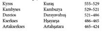

Altıncı Kitap
ERATO
Kargaşalığın Arkası –Miletos Deniz Savaşı – Öbür Savaşlar
1. — İonia’yı ayaklandırmış olan Aristagoras’ın ölümü böyle oldu. Bu arada Dareios’un serbest bırakmış olduğu Histiaios, Sardes’e gelmişti. Susa’dan geldiği zaman Sardes valisi Artaphrenes, İonia ayaklanmasının nedeni üzerine ne düşündüğünü sordu. O da karşılık olarak, bir şey bilmediğini söyledi ve olan biten şeylere çok şaşıran ve hiçbir şeyden haberi olmayan bir adam gibi davrandı. Onun inceden bir oyun oynadığını ve ayaklanmanın neden çıktığını pekâlâ bildiğini sezen Artaphrenes şöyle dedi: “Ülken için gerçek olan şu ki Histiaios, sen pabucuna yama vurdun, Aristagoras da onu kendi ayağına geçirdi.”
2. — Ayaklanma konusunda Artaphrenes bunları söyledi. Onun bir şeyler sezinlemiş olduğundan işkillenen Histiaios, hemen o gece gizlice kaçıp deniz yönüne doğru gitti; Kral Dareios’a oyun oynamış oluyordu; ona en büyük ada olan Sardunya’yı alacağına dair söz vermişti, şimdi de savaşa kışkırtmak için İonialıların yanına gidiyordu. Khios’a uğradı; Khioslular onu hapse tıktılar, Dareios’un kışkırtıcı ajanı olarak gelmiş olmakla suçladılar. Ama başından geçenleri öğrenip de Dareios’a açıkça düşman olduğunu anlayınca salıverdiler.
3. — İonialılar sorguya çekip de Aristagoras’ı niçin isyana iterek İonia’nın başını böyle belaya soktuğunu sordukları zaman, Histiaios gerçek nedenleri açıklamadı; Dareios’un Fenikelileri kendi ülkelerinden kaldırıp İonia’ya yerleştirmek, buna karşılık İonialıları Fenike’ye sürmek istediğini söyledi; o öğütleri bundan ötürü vermiş oluyordu. Oysa böyle bir tasarı kralın aklından bile geçmemişti ve bu, Histiaios’un İonialıların gözleri önünde salladığı bir umacıdan başka bir şey değildi.
4. — Arkadan, Histiaios Sardes’e yerleşmiş olan Perslere Atarneuslu Hermippos ile haberler yolladı, bu haberler ayaklanma konusunda daha önce de görüşmeler yapılmış olduğunu meydana vuruyordu. Lakin Hermippos mektupları sahiplerine verecek yerde hemen götürüp Artaphrenes’e teslim etti; bütün entrikayı öğrenmiş olan vali, Hermippos’a Histiaios’un mektuplarını sahiplerine vermesini, alacağı cevapları da gene kendisine getirmesini söyledi. Böylece suç ortakları meydana çıkmış ve Artaphrenes bu fırsattan yararlanarak pek çok Pers’in canına kıymıştır.
5. — Sardes’de bu işler olurken, bu yandan umudunu yitiren Histiaios’u Khioslular, kendi isteği üzerine Miletos’a götürmüşlerdi. Ama zaten Aristagoras’tan kurtulmuş olduklarına şükreden Miletoslular, ülkelerine yeni bir tyranın gelmesi için hiç de iştahlı görünmüyorlardı. Histiaios gece vakti Miletos’a zorla girmeye kalktı: Bir Miletoslu onu bacağından yaraladı. Ülkesinden geri atıldı ve yeniden Khios’a döndü; Khioslulardan gemi alamayınca Mytilene’ye geçti ve kendisine küçük bir donanma vermeleri için Lesbosluları kandırabildi; Lesboslular onun için sekiz trirem donattılar ve onunla beraber Bizans’a doğru yelken açtılar. Orada boğazları tutarak Karadeniz’den çıkan gemileri yakalamaya başladılar. Histiaios’un emirlerine baş eğenlere dokunmuyorlardı.
6. — Histiaios ve Mytileneliler bu seferi yürütürlerken, Miletos’da da kara ordusu ile desteklenen önemli bir donanma bekleniyordu. Pers generalleri birleşmişler, bütün birliklerini tek ordu halinde toplamışlardı ve öbür sitelere önem vermeyerek, doğru Miletos üzerine yürüyüşe geçmişlerdi. Deniz kuvvetleri içinde savaşa en çok iştahlı olanlar Fenikelilerdi; kısa süre önce boyun eğmiş olan Kıbrıslılarla Kilikialılar ve Mısırlılar da onlarla beraber geliyorlardı.
Lade Adası Bozgunu
7. — Böylece Miletos ve İonia’nın geri kalan yerlerine karşı sefer açılmış oluyordu. Durumu öğrenen Miletoslular, Panionion’a elçiler gönderdiler; orada görüşmeler yapıldı ve Perslere karşı kara ordusu çıkarmamaya karar verildi; Miletoslular kalelerini kendileri savunacaklardı, yedekte bir tek gemi bırakmadan büyük bir donanma hazırlanacak ve Miletos’u gemilerden oluşan bir kale ile savunmak üzere hemen Lade’de toplanacaklardı. (Lade, Miletos önündeki küçük adadır.)
8. — Bu karar alındıktan sonra gemilerini tam takım donatan İonialılar, Lesbos’daki Aiollar da yanlarında olduğu halde toplantı yerine geldiler; savaş düzenleri şöyleydi: Miletoslular doğu yönünde, donanmanın sağ kanadını tutacaklardı; saf halinde seksen gemi dizmişlerdi; onlardan sonra Priene’nin on iki, Myus’un üç gemisi geliyordu, Myus gemilerinden sonra Teosluların on yedi gemisi vardı; Teos gemilerinden sonra Khios’un yüz gemisi sıralanıyordu. Onlardan sonra Erythrai ve Phokaia gemileri dizilmişlerdi; Erythrai sekiz, Phokaia üç gemiyle katılmışlardı. Phokaialılardan sonra Lesbosluların yetmiş gemisi geliyordu; en son, batı ucunda Samosluların altmış kadırgası uzanıyordu. Toplam olarak donanmaya yüz elli üç gemi katılmış oluyordu.
9. — İonia kuvvetleri böyleydi. Ama barbarların altı yüz gemileri vardı. – Pers donanması ve kara ordusu Miletos önlerine geldiği zaman, İon donanmasının önemli olduğunu öğrenen Pers şefleri, başarıdan şüpheye düştüler; denizde yenilirler ve Miletos’u alamazlarsa, Dareios’dan çekecekleri vardı. En çok bundan korkuyorlardı ve Miletoslu Aristagoras tarafından iktidardan düşürülmüş ve Perslere sığınmış olan ve bu sefere Perslerin yanında katılan eski İonia tyranlarını çağırdılar. Bunları toplayınca şunları söylediler: “İonialılar, işte sizin için krala yararlı olmanın zamanı geldi; karşı yandaki yurttaşlarınızı kazanmaya çalışınız; onlara şöyle söz veriniz: Ayaklandıkları için ceza görmeyecekler, ne tapınakları, ne de mülkleri yakılacak, eskisinden daha ağır bir muameleye uğramayacaklar. Ama sizi dinlemezler, ne olursa olsun deyip savaşa girerlerse, başlarına nelerin geleceğini de iyice anlatınız: Savaşı kaybedecekler ve köle olacaklardır; oğulları iğdiş edilecek, kızları Baktra’ya gönderilecek, toprakları başkalarına verilecektir.”
10. — Böyle söylediler ve İonia tyranları kendi sitelerinin adamlarına geceleyin haberler uçurdular. Ama bu haberleri alan İonialılar bunları kabul etmediler, ihanete razı olmadılar ve bunların her biri bu haberin yalnız kendisine gönderildiğini sanıyordu. – İşte Miletos önlerine gelen Perslerin ilk iş olarak yaptıkları bunlardı.
11. — İonia şefleri Lade adasında toplanıp savaş meclisi kurdular. Söz alan hatipler arasında bulunan Phokaialı şef Dionysios şu sözleri söyledi: “Evet, İonialı yurttaşlar, ustura ağzı üzerindeyiz239; kıl payı farkla, özgür ya da köle olacağız ve üstelik kaçıp da yakalanmış köle durumuna gireceğiz. Şimdi eğer zahmeti göze alırsanız; şüphesiz zor bir an geçireceksiniz, ama sonra düşmanı yenecek ve özgür olacaksınız; yok işi gevşek tutar, düzeni bozarsanız, ayaklanmanın cezasını kraldan fazlasıyla çekersiniz. Söylediklerime inanınız ve bırakınız sizi ben yöneteyim ve ben, eğer tanrılar izin verirlerse, size düşmanın savaşa bile giremeyeceğini, girse bile büyük kayıplar vererek çıkacağını söyleyebilirim.”
12. — Dionysios’u dinleyen İonialılar onun buyruğu altına girdiler. O, her sabah gemileri uzun diziler halinde açık denize çıkarttırıyor, tam teçhizatlı kürekçilere, sıra ile iki düşman gemisi arasından geçme talimleri yaptırıyordu. Sonra günün geri kalan saatlerinde gemileri demir üzerinde bırakıyor ve İonialıları akşama kadar çeşitli işlerde çalıştırıyordu240. Yedi gün her dediğini yaptılar, emirlerini yerine getirdiler; ama ondan sonra bu çeşit işlere alışkın olmayan İonialılar, kızgın güneş altında yorgunluktan bitkin bir halde söylenmeye başladılar: “Hangi tanrının dediğine karşı çıktık da başımıza bu kadar rezillik geldi,” diyorlardı. “Üç gemiyle gelip başımıza geçen bu Phokaialı palavracının buyruğu altına girmek için aklımızı yitirmiş, ipin ucunu kaçırmış olmalıyız. Bizi babasının uşağı gibi çalıştırıp ağır iş altında gebertiyor; işte birçoğumuz hasta düştü, daha birçoğumuzun başına da aynı şey gelecek. Bu kadar eziyet çekmektense, bırakalım ne olacaksa olsun. Bugünden zincire vurulmaktansa, bekleyip yarın köle olmak daha iyi. Haydi be! Artık elimizi bir işe sürmeyelim!” Böyle konuşuyorlardı ve hiçbiri artık buyruk dinlemek istemiyordu; kara ordusu gibi adada barakalar kurup gölgede yatıyorlar; gemiye binip talime çıkmaya yanaşmıyorlardı.
13. — İonialıların bu hallerini gören Samoslu şefler, ki daha önce Syloson oğlu Aiakes, Perslerin buyruğu üzerine kendilerine İonialıların saflarından ayrılmaları için haber göndermişti, işte bu Samoslu şefler, İonia saflarında esen bozgunu görünce, o önerileri düşünmeye koyuldular, ayrıca Büyük Kral’a üstün gelmenin olanaksız olduğunu da açıkça görüyorlardı; zira bu filoyu yenseler bile arkadan beş kat güçlüsünün geleceğinden hiç şüpheleri yoktu. İonialıların bu hallerini kendileri için fırsat saydılar ve tapınaklarını ve mallarını kaybetmeden işin içinden sıyrılmayı yeğ buldular. – Perslerin aracı olarak kullandıkları bu Aiakes, Aiakes oğlu Syloson’un oğluydu; Samos’da tyranken, öbür İon tyranları gibi, Aristagoras onun elinden de iktidarı almıştı.
14. — Fenikeliler davrandıkları zaman, İonialılar da gemilerini uzun diziler halinde açığa sürdüler. İki taraf karşılaştı, savaş başladı. Bu deniz savaşında İonialılardan hangileri alçaklıktan, hangileri yiğitlikten yana önde gitmiştir, bunu kesin olarak söyleyemem, zira hepsi de birbirini suçlamıştır. Denildiğine göre Samoslular, Aiakes ile yaptıkları anlaşma uyarınca, yelken basıp saftan çıkmışlar ve Samos’a doğru yol almışlardır, ancak bunlardan on bir tanesi onlara katılmamıştır; bu on bir geminin komutanları, yukarıdan aldıkları emre uymayarak yerlerinde kalmışlar ve savaşmışlardır. Samos Halk Meclisi, bunların gösterdikleri yiğitliğin anısı olarak bir dikme taş dikmeye ve üzerine her birinin adını baba adlarıyla birlikte yazmaya karar vermiştir; bu dikme taş bugün de agoradaki yerinde durmaktadır. Savaş komşularının kaçtıklarını gören Lesboslular da Samoslular gibi yapmışlar, İonialıların büyük bölümü de onlara katılmıştır.
15. — Kalıp savaşanlar arasında en büyük kaybı Khioslular verdiler, zira parlak başarılar kazanmışlar, canla başla savaşmışlardı. Yukarıda dediğimiz gibi, yüz gemiyle safa girmişlerdi ve her gemiye kendi yurttaşlarından kırk seçkin asker koymuşlardı. Savaş arkadaşlarından çoğunun ihanet ettiklerini gördüler. Ama onlar gibi alçakça davranmayı kendilerine yediremediler ve çevrelerinde kalmış olan az sayıdaki müttefikleriyle yalnız başlarına savaştılar, kendilerini düşman gemileri üzerine attılar, düşmanın çok sayıda gemisini saf dışı bıraktıktan sonra kendi gemilerinin de çoğunu kaybettiler. Ellerinde kalanlarla da yurtlarına doğru kaçtılar.
16. — Gemileri çok zarar gören ve düşman tarafından kovalanan Khioslular, Mykale’ye sığındılar. Gemilerini karaya oturtup orada bıraktılar. Sonra kara yolculuğuna çıktılar. Ephesos topraklarına vardılar; geceydi ve Ephesos kadınları Thesmophoriaları kutluyorlardı; Khios denizcilerinin başlarına gelenlerden haberi bulunmayan Ephesoslular, silahlı bir kuvvetin ülkelerine girdiğini görünce, bunları kadınlarını kaldırmak üzere gelmiş bir haydut çetesi sandılar; bütün kent, kadınlarını korumak için atıldı ve bütün Khioslular kılıçtan geçirildiler. Alın yazıları böyle oldu.
17. — Phokaialı Dionysios’a gelince, düşmanın üç gemisini ele geçirmiş, sonra İonialıların durumundan hayır kalmadığını görmüş ve Phokaia’ya dönmek istememişti; bütün İonia gibi kendi ülkesinin de köleleştirileceğini biliyordu. Bir an soluk almadan doğru Fenike’ye gitti, bir sürü ticaret gemisi batırdı, dünyanın malını elde etti ve oradan Sicilya’ya yelken açtı, orada üslendi ve korsanlığa başladı; yalnız Kartacalılara ve Etrüsklere saldırıyor, Yunanlılara dokunmuyordu.
Lade Savaşının Sonuçları
18. — Denizde İonialıları yenen Persler, Miletos’u denizden ve karadan kuşatmaya almışlardı. Duvarların altındaki toprağı kazmışlar, her çeşitten makineler kullanmışlardı; böylece Aristagoras’ın başlattığı ayaklanmanın altıncı yılında241, kenti alıp dipten doruğu yıkmışlardır. Ahaliyi köleleştirmişlerdir. Bu felaket, oraklin Miletoslular için söylediklerini doğrulamış oluyordu.
19. — Argoslular kentlerinin kurtuluşu için Delphoi’ye danışmışlardı. Orakl cevabını vermişti, cevabın bir bölümü Argosluları, bir bölümü de Miletosluları ilgilendiriyordu. Argoslular için olanı, hikâyemde yeri geldiği zaman söyleyeceğim. Miletoslulara, kendilerinin haberi olmadan değinen bölüm şudur:
O zaman, Miletos, ey belalar işçisi, o zaman
Birçokları için zengin bir şölen, parlak bir ganimet
Olacaksın, kadınların ele geçecek, uzun saçlıların
Ayaklarını yıkayacaklar ve Didyma, bizim
Tapınağımız, yabancı efendilerin malı olacak
Miletosluların başına işte bu geliyordu, erkeklerin çoğu uzun saçlı Perslerin ellerinde can vermişlerdi, çocukları ve kadınları köle olmuşlardı ve Didyma, kutsal yapılar242, orakli barındıran tapınak ve mihrap yağma edilmiş, yakılmıştı. Bu duvarların içindeki zenginliği, hikâyemin birçok yerinde daha önce belirtmiştim.
20. — Esir edilen Miletoslular Susa’ya gönderildiler. Kral Dareios bunlara kötülük etmedi; Erythreia denilen denizin kıyılarında ve Dicle suyunun ağzında bulunan Ampe kentine yerleştirmekle yetindi. Miletos toprakları Perslerle Karialılar arasında bölüşüldü; Persler Miletos kenti ile yakınındaki kırlık yerleri, Pedasos Karialıları da dağların eteklerindeki yerleri aldılar.
21. — Kentlerini kaybettikten sonra Laos ve Skydros’a yerleşmiş olan Sybarisliler, Perslere yenilen Miletoslulara, eskiden onlardan görmüş oldukları yakınlığa karşılık bir ilgi göstermediler. Krotonlular Sybaris’i aldıkları zaman Miletos’da bütün gençler kafalarını kazıtmışlar, büyük yas tutmuşlardı. Zira bizim bildiğimiz, bu iki site kadar birbirine yakın dostluk besleyen iki site yoktur. Atinalıların davranışı Sybarislilerden çok başka oldu. Atinalılar, Miletos’un Perslerin eline geçmiş olmasına, sözle anlatılamayacak kadar çok yanmışlardır; bunu belirten birçok örnek arasında şunu veriyoruz: Phrynikhos, Miletos’un düşüşünü anlatan dramı oynatırken243 bütün tiyatro gözyaşlarına boğulmuş, halka böyle büyük ve ulusal bir acıyı hatırlattığı için bir drahmi para cezasına çarptırılmış ve dramın oynatılması yasak edilmiştir.
22. — Artık Miletos’da Miletoslu kalmamıştı. Samos’da ise mülk sahibi olanlar, kaptanlarının Medler karşısında takındıkları durumdan hoşnut kalmadılar. Deniz savaşından hemen sonra toplanarak, Samos’da kalıp Medlerin ve Aiakes’in kölesi olmaktansa, Tyran Aiakes gelmeden önce gidip bir koloni kurmaya karar verdiler. Tam o sırada Sicilya’nın Zankle kenti244 yurttaşları elçiler göndererek, Güzel Kıyı üzerinde kurmak istedikleri İon kentini gelip kurmaları için İonialılara öneride bulunmuşlardı; Güzel Kıyı denilen bu yer Sicilya’nındı; burası Sicilya’nın Etruria’ya bakan bölgesidir. Bu çağrıyı yalnız Samoslularla Miletos’tan kaçabilmiş olanlar kabul ettiler.
23. — Bu sefer sırasında geçen olaylar şunlardır: Sicilya’ya giden Samoslular, Zephyrion Burnu’ndaki Lokroililer ülkesine vardılar245. Bu sırada Zankleliler, başlarında kralları Skythes bulunduğu halde, yağma edip yıkmak istedikleri bir Sicilya kentini kuşatıyorlardı. Durumu haber alan ve Zanklelilerle arası iyi olmayan Rhegion tyranı Anaxilaos, Samoslularla görüştü. Onları Güzel Kıyı’dan vazgeçirerek, o sırada içinde erkek bulunmayan Zankle’yi almaları için kandırdı. Kentlerinin elden gitmiş olduğunu öğrenen Zankleliler koşup geldiler, bu arada müttefikleri olan Gela tyranı Hippokrates’i de yardıma çağırdılar. Hippokrates, ordusu ile birlikte gelecekmiş gibi davrandı; ama tersini yaptı. Kenti kaybetmiş olduğunu bahane ederek Skythes’i zincire vurdu, kardeşi Pythogenes ile birlikte İnyx kentine gönderdi; sonra Samoslularla anlaştı, karşılıklı antlar içildi ve Zanklelilerin geri kalanını da onlara teslim etti. Buna karşılık Samoslular, kentte taşınabilen malların ve kölelerin yarısını, kent dışındakilerin de hepsini ona vereceklerdi. Halka gelince, büyük bölümünü Hippokrates kendisi için sakladı, zincire vurup köle yaptı, içlerinden belli başlı üç yüzünü ayırıp, öldürülmek üzere Samoslulara verdi. Ama Samoslular böyle bir şey yapmadılar.
24. — Zanklelilerin kralı Skythes, İnyx’den Himera’ya kaçmıştı; oradan Asya’ya geçti ve Kral Dareios’a gitti, Dareios onu Yunanistan’dan gelenlerin en doğrusu olarak tutmuştur; zira kralın izni ile Sicilya’ya dönmüş olduğu halde orada kalmamış, ömrünün sonuna kadar Persler arasında şan ve şeref içinde yaşamış, orada ihtiyarlayarak ölmüştür. – Samoslular Medlerin elinden böyle kurtulmuşlardır ve Zankle gibi görkemli bir kente vuruşmadan sahip olmuşlardır.
25. — Miletos için girişilen deniz savaşından sonra Fenikeliler, Syloson oğlu Aiakes’i Samos’a götürdüler; Perslerin buyruğu böyleydi, onu kendileri için değerli bir yardımcı sayıyor, iyilik etmek istiyorlardı. Dareios’a başkaldıran uluslar arasında yalnız Samosluların kentleri ve tapınakları yanmaktan kurtuldu, çünkü savaş sırasında gemilerini alıp gitmişlerdi. Miletos’un alınışından hemen sonra, Persler Karia’yı da egemenlikleri altına aldılar, Karia kentlerinden kimisi kendiliğinden, kimisi de zor karşısında boyun eğmiştir.
Histiaios’un Sonu
26. — Burada bunlar olup biterken, Bizans dolaylarını tutup Karadeniz’den gelen İon ticaret gemilerini vurmakla uğraşan Miletoslu Histiaios, Miletos’da olup bitenleri haber almıştı. Hellespontos’u Apollophanes oğlu Abydoslu Bisaltes’e bırakarak, kendisi Lesboslularla birlikte Khios’a doğru yelken açtı; Khios garnizonu, onu karaya bırakmadı, bunun üzerine, “Sığlık” denilen yerde o garnizonla vuruştu, çoğunu kılıçtan geçirdi. Polikhna’yı246 üs olarak kullanan Histiaios ve yanındaki Lesboslular, zaten Miletos deniz savaşından büyük kayıplarla çıkmış olan Khiosluları yenerek adayı ele geçirdiler.
27. — Bir kentin başına büyük yıkımlar gelmeden önce, genellikle bunu haber veren şeyler olur. Khios’un başına gelecekler de önceden belli olmuştu. Delphoi’yle koro olarak gönderdikleri yüz gençten yalnız ikisi geri dönebilmişti; geri kalan doksan sekizi, o aralık patlak veren vebaya yakalanıp ölmüşlerdi. Ayrıca kentte gene o sıralarda ve deniz savaşından az önce, bir okul içeride ders görmekte olan çocukların başına yıkılmıştı; yüz yirmi çocuktan yalnız biri kurtulmuştu. Tanrıların uyarıları böyle olmuştu. Arkadan bütün kenti dizüstü çöken bir dövüşçü gibi sarsan deniz savaşı gelmişti; şimdi de bütün bunlar yetmiyormuş gibi, Lesbosluların başında Histiaios ortaya çıkıyordu; çok eziyet çekmiş olan Khioslular artık bu yıkıma karşı koyamadılar.
28. — Histiaios, bundan sonra elindeki çok sayıda İonialı ve Aiolialı ile birlikte Thasos’a karşı sefer açmıştır. Thasos’u kuşattığı sırada Fenikelilerin Miletos’dan kalkarak İonia’nın öbür bölgelerine doğru yelken açtıklarını haber aldı. Bunun üzerine Thasos’u alıp yağma etmekten vazgeçerek bütün ordusuyla Lesbos’a gitti. Ama orduda kıtlık başlamak üzereydi, bunun için Mysia’da Atarneus ve Kaiokos ovalarındaki ekini kaldırmak üzere Lesbos’tan kalkıp karşı kıyıya geçti. Bu bölgede tam o sırada, güçlü bir ordunun başında olarak Harpagos adında bir İranlı bulunuyordu; Histiaios ordusu karaya çıkarken üstlerine atıldı, Histiaios’u yakaladı ve ordusunun büyük bölümünü öldürdü.
29. — Histiaios şöyle yakalanmıştır: Yunanlılarla Persler, Atarneus topraklarındaki Melene’de savaşa girmişlerdi, bir süre sonra yedekteki atlı birlikler de Yunanlıların üzerine atıldılar; atlıların saldırısı üzerine Histiaios’un askerleri kaçmaya başladılar; krala karşı suçlu olmakla beraber onun kendisini bağışlayacağına güvenen Histiaios, canını kurtarma içgüdüsüne kapıldı: Kaçarken önünü kesen bir Pers neredeyse onu yakalayıp vuracaktı ki, adını bildirdi, Miletoslu Histiaios olduğunu söyledi.
30. — Öyle sanıyorum ki, yakalandıktan sonra Kral Dareios’a gönderilmiş olsaydı, kötülük görmez, suçunun cezası o kadar ağır olmazdı. Ama onun bağışlanacağını kestiren ve cezadan kurtulmakla kalmayıp yeniden kralın gözüne girmesinden çekinen Sardes valisi Artaphrenes ile onu yakalamış olan Harpagos, sırf bu yüzden Sardes’e getirilir getirilmez kazığa vurdular; kafasını kesip mumyaladılar ve Susa’ya, Kral Dareios’a gönderdiler. Dareios onu kendisine canlı göndermedikleri için onları azarladı; Histiaios’un başını yıkattı, kefene sardı ve şanına layık biçimde, sanki kendisine ve Perslere büyük hizmetlerde bulunmuş bir adammış gibi gömdürttü.
İonia’nın Yıkım Günleri
31. — Histiaios’un sonu böyle oldu. – Pers donanması Miletos yakınlarında kışladı, ikinci yıl denize açıldı ve anakaraya yakın olan Khios, Lesbos ve Tenedos adalarına kolayca baş eğdirdi. Barbarlar adaları aldıkları zaman halkı ağ ile avlar gibi topluyorlardı. Ağ dedimse şöyle: Her biri yanındakinin elini tutuyor, adanın kuzey kıyısından güney kıyısına kadar uzanan bir zincir meydana gelmiş oluyor, sonra bir baştan öbür başa yürüyor ve önlerine çıkan insanları sürgün avındaki gibi topluyorlardı. Anakaradaki İon kentlerini de aynı kolaylıkla ele geçiriyorlardı; ama bu ağ manevrasını uygulayamıyorlardı, çünkü buralarda böyle bir şey yapılamazdı.
32. — Pers şefleri, gemileriyle gelip İonia gemileri karşısına dizildikleri zaman, İonialılara karşı savurdukları tehditlerin hepsini gerçekleştirmişlerdir. Bir siteye girdikleri zaman en güzel oğlan çocukları ve çocuk yapabilecek erkekleri iğdiş edilmek üzere ayırıyorlardı; en güzel kızlar Büyük Kral’ın sarayına gidiyorlardı. Aynı anda kentleri ve tapınakları ateşe veriyorlardı. Böylece İonialılar üçüncü kez köle oluyorlardı; birinci sefer Lydialılar eliyle köle olmuşlardı, sonradan iki sefer de Perslerin kendi eliyle aynı akıbete uğruyorlardı247.
33. — İonia’dan ayrılan donanma, Hellespontos’un batı kıyısını da baştan başa egemenliği altına aldı. Doğu kıyılarını, sırf Perslerden kurulu kolordular, zaten daha önce anakaradaki bir savaşla ele geçirmişlerdi. Hellespontos’un Avrupa kıyılarında Khersonesos –ki pek çok oturma yerini kapsıyordu– Perinthos gibi Thrak kaleleri ile Selymbria ve Bizans bulunuyordu. Bizans ve karşısındaki Khalkedonlular, Fenike gemilerinin gelmesini bile beklememişlerdi; ülkelerini bırakıp çıkmışlar, Karadeniz’e girerek orada Mesambria kentini kurmuşlardı. Fenikeliler bu dediğim ülkeleri ateşe vermişler, taş üstünde taş bırakmamışlar, arkasından Prokonnesos ve Artake’ye sapmışlar, buraları da yaktıktan sonra, ilk seferinde dokunmadıkları illeri yağma etmek üzere yeniden Khersonesos’a dönmüşlerdi. Yalnız Kyzikos’a dokunmamışlardır, çünkü bunlar Fenikeliler gelmeden önce Daskyleion valisi Megabazos oğlu Oibares ile anlaşarak, kralın egemenliği altına girmeyi kabul etmişlerdi. Kardia ili dışında bütün Khersonesos, böylece Fenikelilerin eline geçmiş oluyordu.
Miltiades
34. — Bu illerin tyranı, o zamana kadar Stesagoras oğlu Kimon’un oğlu Miltiades’dir. Başka bir Miltiades248 ki, Kypselos oğlu idi, buraları çok daha önceleri şöyle ele geçirmişti: Khersonesos, Thrak uluslarından Dolonkların elinde bulunuyordu. Bu Dolonklar bir savaşta Apsinthialılara yenilmişler ve bu savaş üzerine danışmak üzere krallarını Delphoi’ye göndermişlerdi. Pythia, tapınaktan çıktıktan sonra kendilerine ilk olarak kendiliğinden konukseverlik gösterecek olan adamı alıp yurtlarına götürmeyi ve orada ona koloni kurdurmayı salık verdi. Dolonklar bütün Boiotia ve Phokis boyunca kutsal yolu izlediler, kimse kendilerini evine buyur etmedi; bunun üzerine Atina’ya saptılar.
35. — O dönemde Atina tek başına Peisistratos’un buyruğu altındaydı; ama Kypselos oğlu Miltiades de hatırı sayılır bir kişiydi; yarış atları besleyen bir ailedendi, ataları Aiakos’a ve Aigina’ya dayanıyordu249, ama bu aile Aias oğlu Philaios ile birlikte Atina’ya gelip yerleşeli çok olmamıştı. Bu Miltiades bir gün kapısının eşiğinde otururken Dolonklar oradan geçtiler, üst başları ve kargıları yerli olmadıklarını gösteriyordu; seslendi; geldiler, evine buyur etti. “Olur,” dediler, Miltiades’in konuğu oldular, orakli anlattılar, tanrı buyruğunu yerine getirmesini rica ettiler. Miltiades mırın kırın etmeden, “Olur,” dedi, zaten Peisistratos’un yönetimi ağırına gidiyordu ve kurtulmayı kuruyordu. Oraklin ne diyeceğini, Dolonklarla birlikte gitmesini doğru bulup bulmayacağını öğrenmek üzere hemen kalkıp Delphoi’yle gitti.
36. — Phythia da aynı şeyi söyleyince, Olimpiyat oyunlarında yan yana dört at koşulu arabasıyla yarışlar kazanmış olan Kypselos oğlu Miltiades, kendisine katılmak isteyen Atinalıları da yanına alarak Dolonklarla birlikte yelken açtı; ülkeyi buyruğu altına aldı, kendisiyle beraber gelmiş olanlar da onu tyran yaptılar. Khersonesos kıstağını kesmek ve Apsinthialıların saldırılarına karşı korumak üzere Kardia ile Paktya arasına duvar çekmekle işe başladı. Kıstak otuz altı stad genişliğindedir. Kıstağın beri yanında Khersonesos’un uzunluğu dört yüz yirmi staddır.
37. — Bu geçidi kapattıktan ve Khersonesos’u Apsinthialıların saldırılarından kurtardıktan sonra, başka uluslar içerisinde düşman olarak önce Lampsakosluları seçti. Ama Lampsakoslular pusuya düşürüp onu ele geçirdiler. Beri yandan Miltiades, Lydialı Kroisos’un sevgisini kazanmıştı; başına gelenleri öğrenen Kroisos, Lampsakoslulara Miltiades’i salıvermeleri için haber gönderdi; yoksa onları çam ağacı gibi ezecekti. Lampsakos’da Kroisos’un bu sözü ile, yani çam ağacı gibi ezmek sözü ile ne demek istediğini uzun boylu düşündüler. Bir ihtiyar epeyce kafa yorduktan sonra anladı ve açıkladı: Ağaçlar içerisinde yalnız çam ağacı, bir defa kesildi mi ölür, bir daha sürmezdi. Kroisos’un öfkesinden korkan Lampsakon halkı Miltiades’i salıverdi.
38. — Kroisos tarafından kurtarıldıktan sonra çocuk bırakmadan öldü ve iktidar ile beraber mal varlığını da ana tarafından üvey kardeşi olan Kimon’un oğluna bıraktı. Bu oğlun adı Stesagoras’dı. Miltiades ölünce, Khersonesos ulusları onun adına da kent kurucularına yapıldığı gibi kurban adama günleri ayırdılar; şerefine jimnastik gösterileri, at yarışları tertiplediler, bu yarışlara Lampsakosluların katılmalarını yasak ettiler. Bu kentle yeniden savaşa tutuştular ve bu sefer de Stesagoras ve o da çocuk bırakmadan öldü; Prytaneion’da birisi kafasına baltayla vurmuştu, bu birisi kendisini asker kaçağı olarak göstermek istedi, oysa eline çabuk bir düşmandı.
39. — Stesagoras’ın sonu da böyle gelince, Peisistratidler, Kimon’un oğlu ve ölen Stesagoras’un kardeşi olan Miltiades’i bir trireme bindirip iktidarı almak üzere Khersonesos’e yolladılar. Atina’da Atinalılar sanki babası Kimon’un ölümünde parmakları yokmuş gibi, onu çok sayarlardı, Kimon’la ilgili olayı başka bir hikâyede anlatacağım. Miltiades, Khersonesos’a gelince, kendisine borçlu olduğu kardeşi Stesagoras’ın anısına saygı göstermiş olmak için evine kapandı. Bunu haber alan Khersonesos ileri gelenleri, bütün illerden bir kurul seçerek onun yanına gönderdiler ve acısını paylaştıklarını belirttiler: O da bunları hapse attı. Ve böylece Khersonesos’un efendisi oldu; beş yüz paralı asker tuttu ve Trakya kralı Oloros’un kızı Hegesipyle ile evlendi.
40. — Kimon oğlu Miltiades, Khersonesos’a geldiği zamanda da burasını şu anlattıklarımızdan başka ve önemli zorluklar içinde bulmuştu. Şu ulaştığımız dönemden iki yıl önce250, Skythlerin önünden kaçmıştı; çünkü Kral Dareios’un kışkırtmış olduğu Skyth göçebeleri Khersonesos’a kadar inmişlerdi. Miltiades onların gelmesini beklemeden kaçmış ve onlar geri gidene kadar da dönmemişti; sonradan Dolonklar gidip kendisini bulmuşlar ve geri getirmişlerdir. Bu olay şimdi anlatmakta olduğumuz tarihten iki yıl önce geçmişti.
41. — Fenikelilerin Tenedos’a geldiklerini öğrenir öğrenmez, varını yoğunu beş trireme yükleyip Atina’ya doğru yelken açtı. Kardia’dan yola çıktığı için Melas Körfezi’nden geçiyordu; Khersonesos boyunca inerken Fenike donanmasının üzerine düştü; dört trirem ile kaçıp İmbros adasına sığındı; peşlerine düşmüş olan Fenikeliler beşinci triremi yakalamışlardı. Bu geminin komutanı Miltiades’in, Trakyalı Oloros’un kızından değil, başka bir kadından olan oğlu Metiokhos’du. Fenikeliler gemiyle beraber onu da ele geçirdiler ve Miltiades’in oğlu olduğunu anlayınca Büyük Kral’a gönderdiler; kralın pek hoşnut kalacağını sanıyorlardı. Çünkü Skythler, İonialılara İstros üzerindeki köprüyü yıkıp kendi topraklarına çekilmelerini söyledikleri zaman, Miltiades İonialılara Skythlerin sözünü dinlemeyi tavsiye etmişti. Ama Dareios, Miltiades oğlu Metiokhos kendisine getirildiği zaman genç adama dokunmadı; tam tersine, birçok iyilikte bulundu; saray, mal, mülk, karı olarak da bir Pers kızı verdi, bundan doğan çocukları Pers soyundan sayıldılar. Bu arada Miltiades de İmbros’dan Atina’ya geçmişti.
Mardonios Seferi
42. — Bu yıl Persler, İonia’ya karşı bir şey yapmadılar; tersine, İonialılar için kurtarıcı olan şöyle tedbirler aldılar: Sardes valisi Artaphrenes, İonia sitelerinin delegelerini getirtti, şu koşullarla anlaşma yapmaları için zorladı: Bundan böyle aralarında çıkacak olan anlaşmazlıkları hakeme başvurmak suretiyle çözecekler, birbirlerini vurup yağma etmeyeceklerdi. Onlara bunu kabul ettirdi. Ayrıca topraklarını ölçtürttü; kullanılan ölçü otuz stadyon karşılığı olan Pers ölçüsü parasangdı ve her birini bu ölçülere göre vergiyle bağladı; o gün bugün vergiler Artaphrenes’in koyduğu hesaplara göre alınmaktadır ve vergi oranları eskisinden pek farklı değildir.
43. — Ortalığı yatıştırmak için alınan tedbirler bunlardı. İlkbaharın başında öbür generaller açığa çıkarıldığında, Gobryas oğlu Mardonios251, önemli bir donanmanın ve çok güçlü bir kara ordusunun başında deniz kıyısına gönderildi. Gençti ve daha yeni Dareios’un kızı Artozostra ile evlenmişti. Mardonios bu ordu ile Kilikia’ya geldi, oradan gemiye bindi, öbür şefler orduyu karadan Hellespontos’a doğru götürürlerken, o da donanmayla denizden gidiyordu. Mardonios Küçük Asya’yı dolanarak İonia’ya vardı. Şimdi burada, bir Otanes’in yediler toplantısında, İran’da demokrasi kurulması fikrini savunmuş olabileceğini kabul etmeyen Yunanlılar için akıl almaz bir şey anlatacağım: Mardonios, İonia’daki bütün tyranları atmış, sitelerde demokrasi kurmuştur. Bu işi tamamladıktan sonra acele Hellespontos üzerine yürüdü. Orada ağır bir donanma ve daha az ağır olmayan bir de kara ordusu topladı, Hellespontos’u gemilerle aştı, Eretria’ya ve Atina’ya karşı yürümek üzere Avrupa’nın içerilerine doğru yol aldı.
44. — Bu kentler seferin bahanesiydi; Pers yüksek komutanlığının asıl amacı, olabildiği kadar çok Yunan kenti almaktı; kendilerine el kaldırmamış olan Thasos’u donanmayla alıp halkını köle yapmaları, kara ordusuyla da daha önce köleleştirilmiş olan uluslara Makedonialıları da katmaları bundandır; zira Makedonia’nın beri yanındaki bütün uluslar zaten boyundurukları altındaydılar. Thasos’dan sonra yollarına devam ettiler ve Akanthos’a kadar kıyı boyu indiler252; sonra Akanthos’dan kalkarak Athos Dağı’nı dolandılar. Burayı dolanırlarken kuzeyden bindiren bir fırtınaya tutuldular, yaman bir fırtınaydı, fena hırpalandılar; gemilerin önemli bölümü sürüklendi, Athos Dağı’na çarptı. Görünüşe göre üç yüz gemi ve yirmi binden fazla adam harcandı; zira bu Athos Dağı bölgesinde canavar balıklar çok olduğundan, çoğu bu canavarlara yem oldular; kimileri de kayalara çarpıp ezildiler; yüzme bilmedikleri için boğulanlar ve soğuktan ölenler de vardı.
45. — Deniz seferinin sonu böyle oldu. Kara ordusu ile Makedonia’da kamp kurmuş olan Mardonios, geceleyin Trakyalı Bryglerin baskınına uğradı. Brygler Mardonios’un çok adamını öldürdüler, kendisini de yaraladılar. Bununla beraber bu ulus da Pers boyunduruğundan kurtulamadı, zira Mardonios bunlara da baş eğdirmeden oradan ayrılmadı. Orada kaldı, Brygleri yendikten sonra orduyu Asya’ya götürdü, zira başında Bryglerin açmış oldukları beladan başka, donanması da Athos yakınlarında ağır kayba uğramıştı. Bu sefer, demek oluyor ki, başarısız bitti, ordu ve donanma Asya’ya döndü.
Thasos ve Altın Damarları
46. — Thasos’un komşuları Dareios’a Thasosluları çekiştirmişler, bunların ayaklanma niyetinde olduklarını söylemişlerdi. Dareios işkillenmiş, seferden bir yıl sonra bunlara bir buyrultu göndererek hisarlarını yıkmalarını ve gemilerini de Abdera’ya götürmelerini istemişti. Çok zengin olan Thasoslular, Miletoslu Histiaios’un yaptığı kuşatmadan beri korku içinde yaşıyorlardı, bunun için tezgâhlara yeni savaş gemileri koymuşlar, bir yandan da kenti kuşatan hisarları pekiştirmeye koyulmuşlardı. Anakaradan ve madenlerinden gelirleri vardı. Skapte–Hyle’deki altın madenlerinden normal olarak seksen talant kazanıyorlardı. Thasos’daki altın madeninden o kadar kazanmıyorlardı, ama bunlar için vergi ödemediklerinden kazançları gene de iyi oluyordu, anakaradan ve madenlerden iki yüz talant yıllık gelir sağlıyorlardı; iyi yıllarda kazançları üç yüz talanta bile çıkabiliyordu.
47. — Bu madenleri ben gördüm; beni en çok şaşırtanları, Thasos ile birlikte burasını da kolonize etmek üzere gelmiş olan Fenikelilerin açmış olduklarıdır. (Zaten adını da bu Fenikeli Thasos’dan almıştır.) Adada Fenikelilerin meydana çıkarmış oldukları bu madenler Samothrake’nin karşısına düşen Ainyra ve Koinyra denilen yerlerdedir; koca bir dağdır ve ocakları çok derin kazılmışlardır.
48. — İşte bu nokta üzerine birkaç ayrıntı. – Şunu da ekleyelim; kralın buyruğu üzerine Thasoslular hisarlarını yıkmışlar, gemilerini Abdera’ya yollamışlardır. Daha sonra Dareios, Yunanlıları yoklattı, savaşacaklar mıydı, yoksa kendisine teslim mi olacaklardı? Bunu öğrenmek istiyordu. Bu maksatla Yunanistan’ın her yanına elçiler gönderip Büyük Kral’a toprak ve su yollamalarını istedi. Yunanistan’a gönderdiklerinden başka, kıyı boyunca kendisine haraç veren öbür bütün illere de haber çavuşları yolladı, kendisi için savaş gemileri ve at taşımak için gemiler yapılmasını emretti.
49. — Gemiler tezgâhlara konuldular; Yunanistan’a gönderilmiş olan çavuşlar, anakaranın ve gittikleri bütün adaların, kralın buyruğuna baş üstüne diyen uluslarını egemenlikleri altına aldılar. Dediğim gibi, bütün adalar ve özellikle Aigina, Dareios’a toprak ve su verdi. Aiginalıların bu davranışlarını öğrenen Atinalılar öfkelendiler, bunu kendilerine karşı düşmanlık gösterisi saydılar, Pers kralı ile bir olup kendileriyle savaşacakları yolunda yorumladılar. Böyle bir bahane elde etmiş oldukları için sevinen Atinalılar, Sparta’ya gidip Aiginalıları Yunanistan’a ihanet etmiş olmakla suçladılar.
Atina–Aigina Çatışması
50. — Bu suçlama üzerine Sparta kralı Anaxandridas oğlu Kleomenes, Aiginalılar içerisinde en çok suçlu saydıklarını yakalamak üzere Aigina’ya gitti. Ama bunları tutuklamak istediği zaman Aiginalılar kıyameti kopardılar. Polykritos oğlu Krios karşı koyanların başında geliyordu; bu gözü pek yurttaş bir tek Aiginalıya bile dokunamayacağını, dokunursa cezasını göreceğini söyledi; onun bu işe Sparta’nın olurunu almadan, sırf Atinalılardan rüşvet yediği için kalkıştığını ileri sürdü; öyle olmasaydı öbür kral da beraber gelir, tutuklamaları beraber yaparlardı. (Bu sözleri onun kulağına fısıldayan Demaratos’un mektubuydu.) Aigina’dan kovulan Kleomenes, Krios’a adını sordu, o da adını söyledi: “Krios,” dedi Kleomenes, “koçum253, boynuzlarına tunç kaplatsan iyi edersin; çünkü yakında zorlu bir düşmana toslayacaksın!”
51. — Bu arada Ariston oğlu Demaratos ki, Sparta’da kalmıştı, herkesin düşüncesini Kleomenes’e karşı çelmeye çalışıyordu; o da Sparta kralıydı, ama onun hanedanı öbürününkinden sonra geliyordu254; aslında eşit, çünkü ataları birdi, yalnız yaşça büyük olmanın verdiği hak ile Eurysthenes dalı önemli üstünlük sağlıyordu.
52. — Lakedaimonlular, ozanların tersini söylemelerine karşın, kendilerini bugünkü yurtlarına kral Aristodemos’un kendisinin (çocuklarının değil) getirmiş olduğunu söylerler. Aristodemos, Hyllos oğlu Kleodaios’un oğlu Aristomakhos’un oğludur. Az zaman sonra Aristodemos’un karısından çocukları oldu. Karısının adı Argeia’ydı; denildiğine göre, babası Polyneikes oğlu Thersandros’un oğlu olan Tisamenos’un oğlu Autesion’dur; bu kadından ikizleri oldu. Aristodemos, çocuklarının doğmasından hemen sonra hastalanıp öldü. Bunun üzerine Lakedaimonlular, yasaları gereğince, ikizlerden büyüğünü kral yapmak üzere toplandılar; ama hangisini seçeceklerini bilemiyorlardı, çünkü ikizler hem görünüş, hem de irilik bakımından birbirinin tıpkısıydı. Seçim yapamayınca, hatta belki seçim yapmaya girişmeden önce, anaya başvurdular; o da ayrım yapamayacağı cevabını verdi. Hangisinin daha büyük olduğunu pekâlâ biliyordu, böyle demesinin nedeni, ikisinin birden kral olmasını istemesiydi. Lakedaimonlular işin içinden çıkamadılar ve bu şaşkınlık içinde, ne yapalım diye sormak üzere Delphoi’ye başvurdular. Pythia, ikisi birden kral olsun, ama büyüğü daha saygın tutulsun diye buyurdu. Pythia’nın verdiği orakl bu oldu; ama Lakedaimonluların bilmedikleri zaten hangisinin büyük olduğuydu, o sırada Messanialı Panites adında birisi onlara bir fikir verdi; Panites denilen adamın verdiği fikir işte şu: Ana gözetlenecek, yıkamak ve emzirmek için hangisini daha önce alıyor, bunu öğrenecekler; eğer hep aynı çocuğu önce alıyorsa, daha öteye gitmenin gereği yoktu; yok eğer bir ayrım yapmıyor, kâh birini, kâh öbürünü alıyorsa, o zaman onun da kendilerinden fazla bir şey bilmediği meydana çıkmış olacak ve başka bir yolu denemek gerekecekti. Spartalılar Messanialının dediğini yapıp Aristodemos’un çocuklarının anasını gözaltına aldılar ve baktılar ki, yıkarken de, emzirirken de hep aynı çocuğu daha önce alıyor, – çünkü kadın, kendisini niçin gözaltında tuttuklarını bilmiyordu. Ananın özel ilgi gösterdiği çocuğu aldılar ve Prytaneion’da yetiştirdiler. Ona Eurysthenes, öbürüne Prokles adını verdiler. Büyüdükleri zaman bu iki çocuk diyorlar, kardeş oldukları halde, birbirlerine düşman kesildiler ve çocukları da bu karşılıklı düşmanlığı sürdürdüler.
53. — Yunanlılar içinde bunları anlatanlar yalnız Lakedaimonlulardır; aşağıda okunacak olanları ben kendi adıma ekliyorum ve bu konuda Yunanlıların anlattıklarına dayanıyorum: Atalarını Danae’nin oğlu Perseus’a kadar sayıp, tanrısal atalarını söylemeyen bu Doris kralları Hellen soyundandırlar; Yunanlılar doğru bir soyağacı çizerek, eski çağlarda kendilerinin de Hellenler arasında bulunduklarını belirtirler. Daha yukarı çıkmadan, yalnız Perseus’a kadar dedim, çünkü Herakles’e soyadı olarak takılan Amphitryon adı gibi, Perseus’a da bir ölümlü adı takılmış değildir; onun için doğru olarak, Perseus’a kadar255 diyorum. Ama eğer Akrisios kızı Danae’den başlayarak ana tarafından çıkılırsa, Doris şeflerinin safkan Mısır ırkından oldukları görülür.
54. — Burada verdiğim soy zinciri Yunanlılara göredir. Perslerin anlattıkları ise şudur: Perseus aslında Asuryalıydı, kendisi Yunanlı oldu, ama ataları Yunanlı değildi; Akrisios256 soyundan üreyenlere gelince, ki bunların Perseus ile hiçbir akrabalıkları yoktur, bunlar Yunanlıların da dedikleri gibi Mısırlıdırlar.
55. — Bu konuda bu kadar açıklamayı yeter sayalım. Zaten Mısırlılar nasıl ve ne gibi büyük işler başararak Dorisliler üzerinde egemen oldular, bunu başkaları açıklamışlardır; onun için ben bu noktayı geçiyorum; ben sadece başkalarının söylemediklerini anlatmakla yetiniyorum.
Sparta Krallarının Ayrıcalıkları
56. — Spartalıların krallarına tanıdıkları ayrıcalıklar şunlardır: Bunlar, birisi Lakedaimon tanrısı Zeus, öbürü Gök tanrısı Zeus olmak üzere iki tanrının rahibidirler; istedikleri ülkeye karşı savaş açabilirler, hiçbir Spartalı buna karşı çıkamaz, çıkarsa günaha girmiş sayılır; savaşta krallar önde giderler, sonra dönerler; savaşta yüz seçme adam tarafından korunurlar; seferde istedikleri sürüyü alırlar, kesilen hayvanların yünleri ve derileri onların olur.
57. — Bunlar savaş zamanı için. Şunlar da barış zamanındaki hakları: Resmi kurban törenlerinde ve şölenlerde başköşeye oturtulurlar, en önce onlara hizmet edilir; her yemekten başkalarına verilenin iki katı verilir; şarap serpme sırasında başta gelirler, kurban derileri de onların hakkıdır. İki ayda bir ve ayın yedinci günü, devlet her ikisine de Apollon tapınağında büyütülmüş lekesiz birer kurban, bir medimnos arpa unu ve Lakonia ölçülerine göre dörtte bir ölçek şarap verir. Bütün oyunlarda başköşe onlarındır. Yurttaşlar arasından proksenleri257 seçme hakkı da onlarındır; ayrıca her ikisi ikişer Pythiacı seçerler; gerektiği zaman Delphoi’ye danışmak bu Pythiacıların görevidir. Krallar gibi onların geçimi de devlete aittir. Eğer krallar genel şölene katılmamışlarsa, evlerine ikişer khoinix arpa ve birer kotule şarap gönderilir; katılmışlarsa her yemekten iki porsiyon alırlar, başkalarının masalarına çağrıldıkları zaman da gene öyle ağırlanırlar. Alınan oraklleri özel arşivlerinde saklarlar, Pytihacılar da bunları bilirler. Tek yargıcı krallardır, ama yargı yetkileri şu durumlarla sınırlıdır: Bir kız henüz babası tarafından nişanlanmadan baba mirasına konarsa, kiminle evleneceğine onlar karar verirler; ulusal yollarla ilgili işleri düzenlemek onlara aittir; bir de birisi bir çocuğu evlat edinmek isterse, törenin onların huzurunda yapılması zorunludur. – Yirmi sekiz kişilik Yaşlılar Meclisi’nde onlar da bulunurlar. Bulunmadıkları toplantılarda, yaşlılardan kendilerine en yakın kimse onun tarafından temsil olunurlar ve bunlar kendi oylarından başka ikişer ek oya sahip olurlar258.
58. — Sparta devletinin krallarına sağlıklarında tanınan ayrıcalıklar bunlardır; öldükleri zaman ise: Bütün Lakonia’ya atlılar çıkarılır, haber herkese duyurulur; kadınlar (davul çalar gibi) tencerelere vurarak kenti dolaşırlar; bu sesleri duyan evlerde iki özgür kişi, bir kadın bir erkek yas giyimlerine bürünürler; bu yasaya uymayanlara ağır cezalar verilir. Kral öldüğü zaman yapılan şeylere gelince, Asya barbarları ne yaparlarsa, Lakedaimon’da aynı şeyler yapılır; barbarların çoğunda da krallar öldüğü zaman yapılan törenler aynıdır. Yani Lakedaimonluların bir kralı öldüğü zaman cenaze törenine, Spartalılardan başka, bütün Lakedaimon ülkesinden, belli sayıda periek de katılır. Bunlar, hilotlar ve Spartalıların kendileri, binlerce kişi halinde, bir yerde toplanırlar. Bunlar başlarını döverlerken bir yandan da kadınlar çığlıklar atarlar, giden kralın kralların en iyisi olduğunu haykırırlar. Eğer kral savaşta ölmüşse, heykeli yapılır, zengin kumaşlar örtülmüş bir yatağa yatırılır ve heykel böylece törene götürülür. Gömülme sırasında agora on gün kapalı kalır, yönetici seçimleri de aynı süre için ertelenir. On gün yas tutulur.
59. — Perslerinkine benzer bir başka töreleri de şudur: Bir kral ölüp de yerine yenisi geçince, yeni kral, krala ya da devlete borçlu olan bütün Spartalıların borçlarını bağışlar. Perslerde yeni başa geçen kral, bütün illerin o tarihteki vergi borcunu siler.
60. — Lakedaimonluları Mısırlılara yaklaştıran bir nokta: Keruxlerin259, flüt çalanların, aşçıların görevleri babadan oğula geçer; her flütçü bir flütçünün, her aşçı bir aşçının, her kerux bir keruxün çocuğudur. Bir başkasının sesi daha gür olabilir, ama buna dayanarak bir kerux çocuğunun işini alamaz; mesleğin babadan kalması başta gelir. – İşte çeşitli açılardan görenekleri böyledir.
Kleomenes–Demaratos Çekişmesi
61. — Anlattığım bu dönemde Kleomenes, Aigina’da Yunanlıların hayrına çalışırken, Demaratos da onun zararına çalışıyordu ve Aiginalıları düşündüğünden değil, çekememezliğinden, kıskançlığından ötürü böyle yapıyordu. Buna karşılık Kleomenes de Aigina dönüşü Demaratos’u krallıktan atmanın yollarını araştırmaya başlamıştı ve anlatacağım olaylardan yararlanarak bunun için bir dayanak da bulmuştu. Sparta kralı Ariston, iki kadınla evlendiği halde çocuğu olmamıştı. Kusurun kendisinde olduğunu sanmadığı için üçüncü bir kadınla evlendi ve bunu şöyle yaptı: Spartalı bir dostu vardı, yurttaşları arasında en çok ona bağlıydı. Bu adamın karısı Sparta’nın en güzel kadınıydı, ama eskiden Sparta’nın en çirkiniydi. Çocukluğunda yüzüne bakılmaz bir şeydi; zengin bir ailenin mirasçısı olan çocuğun çirkinliğine ve bu yüzden çok üzülen ana babaya acıyan sütanası bir çare düşündü; çocuğu her gün Therapna denilen yerde, Phoibos tapınağının üst yanında bulunan Helene tapınağına götürmeye başladı; çocuğu her götürüşünde tanrı heykelinin karşısında ayakta duruyor ve çocuğu çirkinlikten kurtarması için dua ediyordu. Bir gün tapınaktan çıkarken önünü bir kadın kesti, öyle anlatıyorlar, kucağında ne tuttuğunu sordu; o da bunun bir çocuk olduğu karşılığını verdi. Kadın çocuğu kendisine göstermesini rica etti; öbürü olmaz dedi, çünkü çocuğun ana babası çocuğu başkalarına göstermeyi yasak etmişlerdi; ama kadın çok üsteledi, ille görmek istedi. Sütana baktı ki bu kadın ille de görmek istiyor, sonunda gösterdi; kadıncağız çocuğun başını okşadı ve bu çocuğun Sparta kadınları arasında güzelliğiyle nam salacağını söyledi. O günden sonra küçük talihsiz değişmeye başladı. Çağı gelince Ariston’un arkadaşıyla, Alkeides oğlu Agetos ile evlendi.
62. — Oysa Ariston bu güzel kıza karşı içinde aşk duyguları besliyordu. Şöyle bir kalleşlik düşündü: Kadının kocası olan arkadaşına bir armağan verecek oldu, kendi hazinesi içinde neyi isterse alabileceğini söyledi; buna karşılık o da kendisine aynı şeyi yapacaktı. Öbürü karısı bakımından işkilli değildi, nasıl olsa arkadaşının da karısı vardı, razı oldu, anlaştılar, birbirlerine yemin verdiler. Bunun üzerine Ariston, Agetos’a hazineye girip istediğini almasını söyledi, ne alırsa alsın önemli değildi, kendisi de armağan alması sırası gelince, arkadaşından karısını getirmesini istedi. Bunun üzerine arkadaşı bağırarak bunun pazarlığa dahil olmadığını söyledi. Ama arada yemin vardı, kendisine karşı oynanan bu becerikli ihanet oyununa karşı bir şey yapamadı; karısını bıraktı.
63. — İşte Ariston üçüncü karısını böyle aldı, ikincisini boşadı. Kadın, gününden önce, on ay dolmadan bizim Demaratos’u doğurdu. Ariston’un uşaklarından biri, ephoroslarla toplantı halinde bulunan krala gidip haber verdi. O, kadını ne zaman evine getirdiğini bildiği için, parmaklarıyla hesap etti ve tanrıların adını anarak, “Bu benden olamaz!” dedi. Ephoroslar bu sözleri işitmişler, ama o gün için önemsememişlerdi. Çocuk büyüdü ve Ariston o sözü söylemiş olduğuna pişman oldu, zira sonradan Demaratos’un kendi çocuğu olduğuna kesin olarak inanmıştı. Ona neden Demaratos adını verdiğine gelince: Bu olaylardan önce Spartalılar, gelmiş geçmiş kralların en değerlisi olarak bildikleri Ariston’un bir oğlu olsun diye hep birlikte dua etmişlerdi. Çocuğa bundan ötürü Demaratos adını takmıştı.
64. — Zaman geçti, Ariston öldü. Demaratos kral oldu. Ama herhalde o sözlerin yayılması ve bu yüzden Demaratos’un krallığı kaybetmesi gerekiyordu. – Çünkü Kleomenes, ordusunu Eleusis’den geri çevirdiği gün ona can düşmanı kesilmişti ve çünkü Kleomenes, Med partizanlarını cezalandırmak üzere Aigina’ya gittiği zaman bu kin daha da büyümüştü260.
65. — Gözünü hınç bürüyen Kleomenes, Demaratos ile aynı hanedandan olan Argis oğlu Menares oğlu Leotykhidas ile anlaştı. Aralarındaki pazarlık şöyleydi: Eğer o onu, Demaratos’un yerine kral ilan ederse, Leotykhidas da Aiginalılara karşı onunla birlik olacaktı. Leotykhidas da zaten Demaratos’a karşı acı bir kin besliyordu, nedeni şuydu: Damarmenos oğlu Khillon’un kızı Perkalos, Leotykhidas’ın yavuklusuydu; Demaratos onun yavuklusunu elinden almak istiyordu; bu niyetini çabucak gerçekleştirmiş, Perkalos’u kaçırmış ve karısı yapmıştı. Leotykhidas’ın Demaratos’a hıncı bundandı. Leotykhidas, Kleomenes’in hazırladığı bu fırsattan yararlanarak Demaratos’un Ariston’un oğlu olmadığına yemin etti, onu Sparta krallığına haksız yere geçmiş olmakla suçladı. Yargıçlar huzuruna çıktı; Ariston’un, uşak gelip çocuğun doğumunu haber verdiği zaman, parmaklarıyla hesap ettikten sonra, tanrıları tanık göstererek bu çocuğun kendisinden olmadığını belirtmek üzere söylediği ünlü sözleri tekrarladı. Bu sözlere bir savaş atına biner gibi atlayan Letykhidas, bu sözleri Demaratos’un Ariston’un oğlu olmadığına dair bir kanıt olarak kullanıyor, Sparta krallığı görevinin ona verilemeyeceğini savunuyordu; o sırada Ariston ile birlikte toplantı halinde olup o sözleri işitmiş olan ephorosları da tanık gösteriyordu.
66. — Sonunda Spartalılar da konuyu kendi aralarında çekişmeye başlamışlardı, Demaratos, Ariston’un oğlu mudur, değil midir diye Delphoi’yle danışmaya karar verdiler. Bu karardan Kleomenes’in de haberi vardı. Konu Pythia’nın huzuruna getirildiği zaman, Delphoi’de sözü geçer birisi olarak tanınan Aristophantos oğlu Kobon’a başvurdu, o da başrahibe Perialla’yı, Kleomenes’in istediği cevabı vermeye razı etti. Gelen danışmacılara Pythia, Demaratos’un Ariston’un oğlu olmadığı cevabını verdi. Ama sonradan bu düzen meydana çıkmış, Kobon Delphoi’den kovulmuş ve başrahibe Perialla da görevinden alınmıştır.
67. — İşte Demaratos krallıktan böyle atılmıştır. Sonradan Medlerin yanına sığınmıştır. Bunun nedeni, karşılaştığı şu onur kırıcı olay olmuştur: Krallık elden gittikten sonra Demaratos sadece yargıcı olarak kalmıştı. Gymnopaidia’daki bir gösteri sırasında o da seyirciler arasında bulunuyordu. Leotykhidas ki, onun yerine kral olmuştu, onu kızdırmak ve alay etmek için uşağını gönderdi, “Krallıktan sonra yargıçlık nasılmış?” diye sordurdu. Demaratos sorudaki hakareti anladı, cevap olarak kendisinin her ikisini de denediğini, ama Leotykhidas’ın denemediğini261 ve bu sorudan ötürü Lakedaimonluların başına çok kötü ya da çok iyi şeylerin gelebileceğini bildirdi. Bu sözlerden sonra yüzünü kapattı ve evine döndü. Hemen bir kurban hazırladı. Zeus adına kestirdi; kurban kesildikten sonra anasını çağırttı.
68. — Anası gelince kurbanın bağırsaklarından bir parçasını anasının avuçlarının içine koydu ve bu bağırsaklarla anasına yalvardı: “Ana, bütün tanrılar adına ve özellikle şurada mihrabı duran Ocak Tanrısı Zeus adına sana yalvarıyorum: Gerçeği benden saklama; babam kimdir? Leotykhidas, kinine kapılıp senin Ariston’un evine geldiğin zaman ilk kocandan gebe olduğunu ilan etti; başkaları da alçakça masallar uyduruyorlar, senin eşekleri otlatan uşaklarınızın birinden gebe kalmış olduğunu, benim de bu adamın çocuğu olduğumu yayıyorlar. İşte ben şimdi sana geliyorum ve tanrılar aşkına senden gerçeği istiyorum; söyleneni yapmış olsan bile bunu yapan yalnız sen değilsin; çok kadın aynı şeyi yapmıştır, ayrıca Ariston’un çocuk yapacak güçte olmadığı dedikodusu da bütün Sparta’da yaygındır; öyle olmasaydı, ilk karılarından da çocukları olurdu.”
69. — Böyle konuştu; o da ona şu sözlerle cevap verdi: “Oğlum, mademki böyle yalvarıp yakararak benden gerçeği öğrenmek için tanrıları tanık tutuyorsun, bütün gerçeği öğreneceksin. Ariston’un beni evine götürdüğünün üçüncü gecesi, bana doğru Ariston’un biçimine girmiş birinin geldiğini gördüm. Yatağımı paylaştı ve yanında getirmiş olduğu çelenkleri başıma koydu ve gitti. Sonra Ariston geldi. Başımdaki çelenkleri görünce bunları kimin verdiğini sordu: Kendisinin verdiğini söyledim; kabul etmek istemedi; büyük tanrılar üzerine yemin ettim ve dedim ki, böyle söylemesi doğru değildir, çünkü kendisi az önce yanıma gelmiş, yatağımı paylaşmış ve çelenkleri vermiştir. Benim bu sözlerim ve yeminlerim karşısında Ariston, bunun tanrıların işi olduğunu anlamıştı; çelenklerin, avluda giriş kapısının yanında bulunan ve adı Astrobakos olan kahramanın çelenkleri olduğunu görmüştü; öbür yandan kâhinler de ona ziyaretçinin bu kahraman olduğunu söylüyorlardı. İşte oğlum öğrenmek istediğin her şeyi öğrendin: Sen ya bu kahramandan oldun ve baban bu yarı–tanrı Astrobakos’dur ya da baban Ariston’dur; çünkü sana o gece gebe kaldım. Düşmanlarının üzerinde durdukları noktaya, yani senin doğduğunu haber alan Ariston’un birçok kişi önünde senin kendisinin çocuğu olamayacağı (çünkü gerekli zaman, yani on ay dolmamış olduğu) yolunda söylediği sözlere gelince, bu sözleri Ariston bu işlerdeki bilgisizliğinden ötürü söylemiştir. Zira kadın, on ay dolmadan önce de, dokuz ayda da, yedi ayda da doğurabilir262; ben seni oğlum, yedi aylık doğurdum. Zaten Ariston da az sonra düşüncesiz konuştuğunu anlamıştı. Onun için doğumun hakkında anlatılan başka hikâyelere kulak asma; şimdi dinlediklerin gerçeğin tam kendisidir. Eşekçiye gelince, dilerim Leotykhidas’ın ve bu dedikoduları yayanların karıları da onlara eşekçilerden çocuk yaparlar!”
70. — Kadın böyle konuştu; o da öğrenmek istediği şeyi öğrendikten sonra yol hazırlığına girişti ve orakle danışmak üzere Delphoi’ye gidiyorum diyerek çıktı ve Elis’e gitti. Lakedaimonlular Demaratos kaçacak diye kuşkulandılar ve peşine düştüler. Bereket versin, Demaratos onlar varmadan önce Elis’den ayrıldı, Zakynthos’a geçti. Lakedaimonlular da peşinden geldiler, onu buldular ve yanındaki adamlardan ayırmak istediler. Zakynthoslular teslim etmek istemediler, bunun üzerine Asya’ya, Dareios’un yanına gitti. Dareios onu çok iyi karşıladı, topraklar, kentler verdi. İşte Demaratos Asya’ya birçok olaydan sonra ve böyle gelmiştir. Lakedaimon’da birçok iş başarmış, mecliste adı çok duyulmuş bir kişiydi, hatta yan yana koşulmuş dört atlı arabasıyla olimpiyatlara katılmış ve zafer kazanmıştı; yarış kazanan tek Sparta kralı oydu.
71. — Demaratos krallıktan düşürüldükten sonra, yerine Menares oğlu Leotykhidas geçmişti; bunun Zeuxidamos adında bir oğlu oldu ki, bazı Spartalılar bu çocuğa Kyniskos lakabını takmışlardır. Bu Zeuxidamos, Sparta kralı olamadı; arkasında Arkhidamos adında bir çocuk bırakarak, Leotykhidas’tan önce öldü. Zeuxidamos’u kaybeden Leotykhidas, ikinci bir kadınla, Diaktorides’in kızı ve Menios’un kardeşi olan Eurydame ile evlendi. Ama bundan erkek çocuğu olmadı, yalnız Lampito adında bir kız çocuğu doğdu ki, bu da sonradan Zeuxidamos’un oğlu Arkhidamos ile evlenmiştir.
72. — Leotykhidas da son günlerini Sparta’da geçiremedi ve Demaratos’un öcü de böylece yerde kalmamış oldu. Lakedaimon birliklerini Thessalialılara karşı savaşa götürmüştü ve tam bunları dize getirecekken yüksek bir para karşılığında kendisini sattı. Kampta içi para dolu bir zırh eldiveni üzerinde otururken suçüstü yakalandı, yargıç huzuruna çıkarılarak Sparta’dan sürüldü; evi de baştan aşağı yıkıldı; Tegea’ya sığınmış, son günlerini orada geçirmiş ve orada ölmüştür.
73. — Bunlar daha sonraki olaylardır. Anlattığımız dönemde Kleomenes, Demaratos işini becerdikten sonra, Leotykhidas’ı yanına alarak, hiç vakit geçirmeden Aigina üzerine yürüdü, orada başına gelenlerden ötürü, içinde korkunç bir hınç vardı. İki kralın birden geldiklerini gören Aiginalılar karşı durmaktan vazgeçtiler, Spartalılar soy sop ve zenginlik bakımlarından önde giden on Aiginalıyı ayırıp götürdüler. Sitenin en hatırı sayılır kişileri olan Polykritos oğlu Krios ile Aristokrates oğlu Ksambos da bunların arasındaydı. Spartalılar bunları Attika’ya götürüp Aiginalıların can düşmanlarına, yani Atinalılara emanet olarak bıraktılar.
Kleomenes’in Sonu
74. — Kleomenes’in Demaratos’a karşı yaptığı kalleşliği sonradan herkes öğrenmiş, o da ürkmüş ve gizlice Thessalia’ya kaçmıştı. Oradan Arkadia’ya geçti ve Spartalılara karşı kışkırtmalara girişti; Arkadialıları, kendisi nereye götürmek isterse oraya gitmeleri için yemin etmeye zorluyor ve özellikle Arkadialı şefleri, Styx suyu263 üzerine ant içmek üzere Nonakris kentine götürmek istiyordu. Bu Arkadia ilinde, Styx suyunun bulunduğu söylenir, bu bir taştan kaynayan ve kuru taştan bir duvarla çevrili bir yalağa akan sudur. Bu kaynağın bulunduğu Nonakris, Pheneos yakınında kurulu bir Arkadia kentidir.
75. — Kleomenes’in çevirdiği dolapları haber alan Lakedaimonlular ürktüler ve kendisini bütün yetkileriyle yeniden Sparta’ya gelip yerleşmeye çağırdılar. Ama döner dönmez zaten pek yerinde olmayan aklı büsbütün başından gitti; bir Spartalıya rastladığı zaman suratına sopayı indiriyordu. Bu rezillikler ve çılgınlık belirtileri üzerine, akrabaları boynuna ağaç bir lale geçirip bağlattılar. Böyle sımsıkı bağlıyken, yanında yalnız bir gardiyanın bulunduğu bir gün, bir hançer istedi; adam önce vermek istemedi, ama serbest kalınca ben sana gösteririm diye gözünü korkuttu –zira gardiyan hilottu– ve hançeri aldı. Bıçağı eline geçiren Kleomenes kendine vurmaya başladı; önce baldırlarını kesti, dilim dilim doğradı; baldırlardan sonra bacaklara, bacaklardan kalçalara, böğürlere çıktı, sonunda karnını, bağırsaklarını deşti ve öldü. Yunanlılar genellikle, Demaratos işinde Pythia’ya rüşvet yedirdiği için cezasını buldu derler; ama Atinalılar bu akıbeti, onun Eleusis’i ele geçirdiği zaman kutsal ormanın ağaçlarını kesmesine ve böylece Eleusis tanrıçalarına el kaldırmış olmasına yorarlar; Argoslulara göre ise, savaş sırasında, Kahraman Argos’a adanmış olan kutsal alana264 sığınmış olan Argosluları oradan çıkarttırıp kılıçtan geçirtmiş olmasının ve koruyu dokunulmazlığına saygı göstermeyerek yaktırmasının cezasını bulmuştur.
76. — Aslında Kleomenes, Delphoi orakline danıştığı zaman, ona Argos’u alacağı güvencesi verilmişti. Bunun üzerine Spartalılarla birlikte Erasinos ırmağına gelmişti; bu ırmağın Stymphalis Gölü’nden çıktığı söylenir; zira göl, anlaşıldığına göre dibi görünmez bir uçuruma dökülür ve sonradan Argolis’de yeniden yüze çıkar ve Argoslular bundan sonra ona Erasinos derler. – Kleomenes bu ırmağın kıyılarına ulaştığı zaman ırmağa bir kurban kesmiş, ama karşıya geçmek için bir geçit bulamamıştır. Erasinos’un kendi yurttaşlarına ihanet etmemiş olmasından sevinç duyduğunu söylemiş, ama sözlerine Argosluların gene de elinden kurtulamayacaklarını eklemiş. Sonra ordusunu alıp Thyrea’ya götürmüş, denize bir boğa kurban etmiş ve Tiryns topraklarındaki Nauplia’ya geçirmek üzere birliklerini gemiye yüklemiştir.
77. — Argoslular tehlikeye düşen illerini savunmak üzere deniz kıyısına koştular. Tiryns yakınındaki Sepeia denilen yere vardıkları zaman, Lakedaimonluların karşısında ve onların birkaç mızrak atımı ötesinde kamp kurdular. Doğru dürüst bir savaştan çekindikleri yoktu, onları korkutan tuzağa düşürülmekti. Çünkü Pythia bir orakl vermiş ve bunda hem kendilerini, hem de Miletosluları bekleyen bir bozgundan söz etmişti, şu sözlerle:
Ama ne zaman ki dişi, erkeğe üstün gelecek
Ve Argos’da parlak bir nam kazanacak,
Argoslu kadın –alın yazısı budur– batıracak
Kızgın tırnaklarını kendi yaralı gövdesine.
Ve ondan şöyle söz edecek gelecek kuşaklar:
Kargı öldürücü yaralar açtı
Üç kere halkalanmış korkunç yılanda
Bütün bunların bir araya gelmiş olması Argosluların gözünü korkutuyordu. Düşman kampta verilen emirlere kulak kabartmaya karar verdiler. Böylece kendi durumlarını Lakedaimonluların kamplarında duyulan emirlere göre düzenlemeye başladılar.
78. — Çok geçmeden Kleomenes kendisi ne emir verirse, Argosluların da onu yaptıklarını fark etti ve Lakedaimonlulara, öğle yemeği için emir verdiği zaman Argoslular üzerine atılmalarını tembih etti ve öyle yaptılar; Argoslular karşı taraftaki emri duymuşlar, kendileri de yemeğe oturmuşlardı ki düşman bastırdı; çoğu öldürüldü, daha çoğu da Argos kutsal koruluğuna sığındı, düşman da orayı sardı, onları çember içinde tutsak tuttu.
79. — O zaman Kleomenes şöyle yaptı. Yanında asker kaçakları vardı; onlardan koruluğa kapanmış olan Argosluların adlarını öğrendi ve bir haber çavuşu göndererek her birini teker teker çağırttı; dışarıya çıkabileceklerini, çünkü kurtulmalıklarının verildiğini söyletiyordu; Peloponez’de kurtulmalık adam başına iki manadır. Kleomenes böylece adlarını çağırtıp koruluktan çıkarttırdığı elli kişinin kafasını kestirtti. Ormanda kapalı olanların bundan haberleri yoktu; koruluk çok sıktı, ağaçların yaprakları dışarıda arkadaşlarının başlarına gelenleri içeridekilerin gözlerinden saklıyordu. Sonunda birisi ağaca çıktı ve olan biteni gördü. Ondan sonra boşuna çağırdılar, kimse çıkmadı.
80. — Bunun üzerine hilotlara ormanın çevresine çalı çırpı yığmalarını emretti; dediğini yaptılar ve kutsal ormanı ateşe verdiler. Koru yanarken yanında bulunan kaçaklardan birine sordu, bu koru hangi tanrınındır diye. Argos’un olduğu karşılığını aldı. Bu karşılığı alınca yüreğinden bir ah koptu ve şöyle dedi: “Ey Apollon, sen ki geleceği bilirsin, nasıl aldattın beni, Argos’u alacağımı söyleyerek!265Şimdi anlıyorum ki oraklin dediği buymuş!”
81. — Bunun üzerine Kleomenes ordusunun büyük bölümünü Sparta’ya geri gönderdi, yanına seçme bin kişi alarak kurban kesmek üzere Here tapınağına gitti. Sunak taşı üzerinde kurbanı kendi eliyle kesmek isteyince, rahip karşı çıktı; tanrısal yasa, bir yabancının burada kurban kesmesine izin vermiyordu, bunu bildirdi. Kleomenes, hilotlarına emir vererek rahibi dışarı sürükletti ve kırbaçla dövdürdü, sonra kurbanı kendi eliyle kesti ve Sparta’ya döndü.
82. — Dönüşünde düşmanları onu ephorosların karşısına çıkarttılar, Argos’u kolayca alabilecekken almadığını, rüşvet yediğini söylüyorlardı. İşte verdiği cevap –doğru mu, eğri mi bilmiyorum– doğru ya da eğri, savunması şu: Kahraman Argos’a ait olan kutsal alanı aldıktan sonra kurbanlar keserek, tanrının kenti de kendisine nasip edip etmediğini öğrenmeden saldırmayı uygun bulmamıştı. Here tapınağında uygun alametler umarken, tanrısal heykelin göğsünden bir alev fışkırmıştı266; bu kesin olarak Argos’u alamayacağını gösteriyordu Zira alev başından çıksaydı, bu onun kenti alıp yerle bir edeceğini gösterecekti; ama göğsünden çıktığına göre, o da tanrının kendisinden istemiş olduğu şeyi yapıyordu. Bu sözleri Spartalılar içtenlikle söylenmiş sözler olarak karşıladılar, akla yakın buldular, o da kendisini suçlayanları rahatça alt etmiş oldu.
83. — Ama Argos, kanının son damlasına kadar tükenmişti; o kadar ki, mal, mülk kölelerin eline geçti, iktidara geçip ili kendileri yönetmeye başladılar, ölen yurttaşların oğulları erkeklik çağına gelinceye kadar böyle gitti; vakit gelince bu oğullar Argos’u ele aldılar, köleleri kovdular, onlar da gidip zorla Tiryns’i aldılar. İki kent iyi geçiniyordu, ama bir süre sonra kölelerin kentine bir kâhin geldi, adı Kleandros’du. Phigalia’da doğmuştu ve Arkadia’dan geliyordu. Bu adam, köleleri efendilerine karşı yürümeye kandırdı. Bunu oldukça uzun süren bir savaş izledi ve sonunda Argoslular güçbela üstün gelebildiler.
84. — Argoslular, Kleomenes’in delirmesini ve sonunun böyle kötü gelmesini, onun kendilerine çektirdiklerinin cezası olarak yorumladılar. Spartalılar ise onun çıldırmasını tanrıların işi olarak görmezler; onlara göre Skythlerle fazlaca düşüp kalkması sonucu şarabı susuz içmeye alışmıştı, çıldırmasının nedeni buydu. Gerçekten göçebe Skythler, yurtlarını Dareios istila ettiği zaman, öç almak istemişler, Sparta’ya elçiler göndererek antlaşma yapmak üzere görüşmelere girmişlerdi; şu maddeler üzerinde anlaşmayı öneriyorlardı: Kendileri Phasis boyunca ilerleyerek Media üzerine yürürlerken, Spartalılar da Ephesos’dan başlayarak içerilere doğru çıkacaklar ve kendileriyle birleşeceklerdi. İşte o zamanlar derler, antlaşma yapmak üzere gelmiş olan Skythlerle fazlaca düşüp kalkmış, şarabı susuz içmeyi öğrenmiş ve bir daha da şaraba su katmamıştır; Spartalılara göre Kleomenes bu yüzden aklını kaçırmıştır; o zamandan beri kendileri de ne zaman birisi şarabına pek su katmak istemezse, “Skythler gibi yapıyor,” derler. – Kleomenes için Sparta’da böyle anlatırlar. Bana kalırsa, ben Demaratos’a yaptıklarının karşılığını gördü derim.
85. — Kleomenes’in öldüğünü haber alan Aiginalılar, Sparta’ya elçiler göndererek Atina’da rehin tutulan yurttaşları konusunda Leotykhidas’a yakındılar. Lakedaimonlular, bir mahkeme topladılar ve Leotykhidas’ın Aiginalılara karşı çok kötü davranmış olduğuna, buna karşılık Aiginalıların da Atina’da hapse atılanların öcünü almak üzere onu alıp Aigina’ya götürmelerine karar verdiler. Aiginalılar Leotykhidas’ı alıp gideceklerken, Sparta’nın ileri gelenlerinden Leoprepes oğlu Theasidas şunları söyledi: “Ne yapıyorsunuz Aiginalılar? Yurttaşları onu size veriyor diye Sparta kralını alıp gidecek misiniz? Bugün öfkeye kapılıp böyle karar veriyorlar, ama eğer onu götürürseniz, yarın gelir yurdunuzda taş üstünde taş bırakmazlar.” Bu sözler üzerine Aiginalılar kralı götürmekten vazgeçtiler ve şöyle anlaştılar: Leotykhidas onlarla birlikte Atina’ya gidecek ve adamlarını kendilerine geri verecekti.
86. — Leotykhidas Atina’ya gitti, emanetleri geri istedi; Atinalılar vermek istemiyorlardı ve kaçamak yollardan savsaklamaya getiriyorlardı, “Bunları bize iki kral birden getirdi, şimdi yalnız birine geri vermek olmaz,” gibi sözler söylüyorlardı.
a) Sonunda Atinalılar veremiyoruz diye dayatınca, Leotykhidas onlara şöyle bir söylev çekti: “Pekâlâ Atinalılar! Nasıl isterseniz öyle yapınız. Emanetleri geri verirseniz sevap işlemiş vermezseniz günaha girmiş olursunuz. Bakınız, ben size eskiden Sparta’da olmuş bir emanet hikâyesi anlatayım. Biz Spartalılarda anlatılır; Lakedaimon’da, üç kuşak önce bir Epikydes oğlu Glaukos vardı, talih ona dünyanın en güzel şeylerini bağışlamıştı, özellikle onu zamanının bütün Lakedaimonlularından daha üstün kılan bir doğruluk duygusu vardı. İşte bu adam diye anlatılır bizde, bir gün bir olayla karşılaştı: Sparta’ya Miletos’tan birisi geldi, onunla konuşmak istedi ve şunları söyledi: Ben Miletosluyum dedi, buraya senin doğruluğundan yararlanmak için geldim. Çünkü senin doğruluğun İonia’ya kadar bütün Yunanistan’da dillere destan olmuştur; İonia her zaman tehlikelerle dolu bir ülke, buna karşılık Peloponez her zaman güvenlik içinde ve rahat yaşıyor ve talih her zaman aynı kimseye yüz göstermez diye düşündüm. Ve bu düşünce ve hesapla bütün servetimin yarısını gümüşe çevirip, sana emanet bırakmaya karar verdim, çünkü biliyorum ki, bu senin elinde hiç dokunulmadan kalır. Bunları sakla ve tanımalık olarak da şunu al, kim ki sana bunun eşini getirir, ona teslim edersin.
b) Miletos’tan gelen yabancı başka bir şey söylemedi. Glaukos emaneti aldı ve ileri sürülen şartı kabul etti. Aradan çok zaman geçti ve bir gün malını emanet olarak bırakmış olan adamın çocukları Sparta’ya geldiler; tanımalığı gösterdiler ve gümüşü istediler. Ama o, şu karşılığı verdi ve onları başından savmak istedi: Bu kadar eski bir şeyi hatırlamıyorum, söyledikleriniz bana bir şey hatırlatmıyor, hatırlatsa ben de vermek isterim. Eğer gümüşü almışsam, aynen geri veririm; ama eğer böyle bir şey almadı isem, size karşı Yunan yasalarını uygularım. Şimdi size bugünden başlayarak üç ay mühlet veriyorum bu işi kesip atmak için.
c) Miletosluların içleri yandı, gümüşü kaybettiklerini düşünerek geriye döndüler. Ve Glaukos orakle danışmak üzere Delphoi’ye gitti. Yemin etmek suretiyle gümüşü ganimet olarak cebine atıp atamayacağını sordu. Pythia ona şu dizelerle cevap verdi:
Epikydes oğlu Glaukos, tam vaktinde edilen
Gösterişli bir yemin, bir ailenin çok işine yarar;
Yemin et, mademki doğru olanların da sonu er geç ölümdür…
İhanet anadır, doğurur bir kız,
Adsız, elsiz, ayaksız, ama gene de atılır
Yalan yere yemin edenlerin üzerine yolar, öldürür.
Ama doğru adam ulusuna onur kazandırır.
Bu sözleri işiten Glaukos, tanrıya yalvardı, sözlerini bağışlamasını ve öfkesini dindirmesini diledi; ama Pythia, tanrıya bir şey sormakla o şeyi yapmak aynı şeydir diye cevap verdi.
d) Bunun üzerine Glaukos, yabancıları çağırttı ve gümüşlerini verdi. Atinalılar bunu size niçin anlattım, şimdi onu söyleyeceğim: Bu Glaukos’un bugüne kalmış tek çocuğu yoktur ve onu bize hatırlatacak odu ocağı da kalmamıştır. Köksüz bir ağaç gibi, soyu sopu Sparta’dan atılmıştır. İşte görünüz, emanet söz konusu olduğu zaman, onu sizden isteyene hemen geri vermekten başka kurtuluş çaresi yoktur!”
87. — Bu hikâyeyi anlattıktan sonra, Atinalılar bu sözlere rağmen onu dinlemek istemediler. Leotykhidas uzaklaştı. Aiginalılar bir zamanlar Thebaililere uyarak Atina’ya karşı saygısızlık etmişler, onurlarına dokunacak şeyler yapmışlardı ve Atinalılardan bu eski sataşmanın karşılığını görmeden önce, bu Aiginalılar şunu yaptılar: Yürekleri Atina’ya karşı hınçla dolu olarak ve kendilerine haksızlık edildiğine inanarak, öç almak için hazırlandılar; o aralık Atinalılar Sunion’da beş yılda bir yapılan bayramı kutluyorlardı; Aiginalılar pusu kurdular ve Atina’nın ileri gelenlerini taşıyan kutsal gemileri ele geçirdiler; içindekileri hapse attılar.
88. — Aiginalıların yaptıkları bu kabalıktan sonra, Atinalılar artık öç almayı ertelemekten vazgeçtiler ve düşmanlarına karşı hızla hazırlık yapmaya giriştiler. Knoithos oğlu Nikodromos adında birisi vardı, Aigina’nın hatırı sayılır yurttaşlarındandı; Aiginalılara karşı kırgındı, çünkü adadan sürülmüştü. Atinalıların öç almak için hazırlandıklarını duyunca, yurttaşlarına kötülük etmekten başka bir şey düşünmediği için, Aigina’yı onların eline teslim etmek üzere Atinalılarla anlaştı; kendisinin ne günü saldıracağını ve onların da hangi gün gelip kendisini desteklemeleri gerektiğini bildirdi. Anlaştılar, Nikodromos aradaki anlaşmaya uyarak, Eski Kent denilen yeri ele geçirdi. Ama Atinalılar belli günde gelmediler.
89. — Çünkü o aralık Aigina donanmasına çatacak güçte gemileri yoktu, Korinthoslulardan emanet gemi alalım diye uğraşırlarken, partiyi kaybetmişlerdi. O dönemde Atinalılarla pek iyi geçinen Korinthoslular, ricaları üzerine onlara yirmi gemi verdiler, ama güya satıyorlarmış gibi yaparak gemi başına ortalama beş drahmi aldılar; zira yasa, iyilik olsun diye ödünç gemi vermeye izin vermiyordu. Bunları kendininkilere katan Atinalılar, hepsi yetmiş gemi donattılar, Aigina’ya yürüdüler, ama belli günden bir gün geç kalmışlardı.
90. — Atinalılar belli saatte gelmeyince, Nikodromos gemiye atlayıp kaçmıştı. Yanında başka Aiginalılar da vardı, Atinalılar bunlara oturma yeri olarak Sunion’u verdiler. Onlar da burasını kendilerine üs yapıp, adada oturan Aiginalılar üzerine çapul ve yağma seferleri yapmaya başladılar. Ama bunlar da sonra olmuştur.
91. — Aigina’da, halkın Nikodromos’la bir olup kendilerine karşı ayaklanmış olduğu varlıklı sınıf duruma hâkim olmuştu ve ayaklanmayı bastırdıktan sonra, şimdi düşmanlarına işkence etmeye başlamıştı267. Bu yüzden günaha da girmiş, katlandığı akla gelebilecek bütün sungular işe yaramamış, bu günahtan arınamamıştır; tanrıçayı yatıştıramamışlar, devrilmişler ve adadan sürülmüşlerdir. Canlı olarak ele geçirmiş oldukları yedi yüz kişiyi öldürmeye götürüyorlardı. İçlerinden biri bağlarını kırıp, Yasa Koyucu Demeter tapınağı avlusuna koştu, oraya sığındı, kapı tokmağını sımsıkı yakalayıp orada kaldı. Tutup geriye çekemedikleri için vurup ellerini kestiler, parçalanmış bir halde işkenceye götürdüler. Kapı tokmağına yapışmış eller öylece duruyorlardı.
92. — Aiginalılar kendi kendilerini böyle paraladılar. Ama arkadan Atinalıların donanması geldi, yetmiş gemiyle bunlara karşı savaşa girdiler, altta kaldılar ve eski müttefikleri Argoslulardan yardım istediler. Ama onlar yardıma koşmak istemediler. Aiginalılara karşı öfkeliydiler, çünkü Lakedaimonluların Argolis üzerine açmış olduğu sefere, Kleomenes’in yanında, zorla da olsa onlar da katılmışlardı. O istila sırasındaki çıkartmada Sikyon denizcileri de vardı. Argoslular, bundan ötürü Aiginalıları ve Sikyonluları, her biri beş yüz olmak üzere bin talant cezaya çarptırmışlardı. Sikyon suçunu kabul etmiş, yüz talanta uzlaşmıştı. Ama Aigina suçu kabul etmemiş, hatta yüksekten atmıştı. İşte şimdi de Argos, yardım dileklerini resmen geri çeviriyordu. Bununla beraber bin gönüllü gelip onların safında dövüştü. Bunların başında Pentathlon yarışları için yetiştirilmiş268 Eurybates adında bir şef vardı; içlerinden çoğu yurtlarını bir daha göremedi; Aigina’da Atinalıların darbeleri altında can verdiler. Şefin kendisi, Eurybates de teke tek dövüşmekte usta olduğundan, üç kişiyi öldürmüş, ama dördüncüsü olan Dekeleialı Sophanes’in elinde can vermişti.
93. — Aiginalılar, Atina filosunun henüz savaş düzenine girmemiş oluşundan yararlanarak kendi filolarıyla saldırıya geçtiler, yendiler ve içindekilerle birlikte dört gemi ele geçirdiler.
Marathon
94. — Böylece Atina ile Aigina arasındaki savaş başlamış oldu. Bu arada Pers kralı, kendi niyetlerini güdüyordu; uşak, hiç sektirmeden Atinalıları unutmamasını hatırlatıyor, Peisistratidler sürekli kışkırtmalarla kendisini çember içinde tutuyorlardı. Dareios da, denizde ve karada egemenliğini tanımayan Yunanlılara baş eğdirmek için bu bahaneden yararlanmak istiyordu. Mardonios, açtığı seferin üstesinden gelememiş, acınacak duruma düşmüştü; komutanlıktan onu alarak yerine başka şeyler koymuş ve Eretria ile Atina’ya karşı göndermişti; bunlar, Medialı Datis ile yeğeni Artaphrenes oğlu Artaphrenes’ti; Atina’yı ve Eretria’yı köleleştirmek ve köleleştirilen halkı huzuruna getirmek emrini almışlardı.
95. — Bu dediğimiz generaller, kralın yanından ayrılarak yola çıktılar, Kilikia’ya geldiler, iyi hazırlanmış büyük bir ordu ile Aleion Ovası’nda kamp kurdular; illerden istenilen deniz askerleri de gelip onlara katıldılar ve ayrıca Dareios’un haraca bağlı yerlerde geçen yıl yaptırmış olduğu yük gemileri de atları yüklemek üzere geldiler. Atlar ve kara birlikleri gemilere yüklendi ve altı yüz trirem İonia’ya doğru yola çıktı. Oraya varınca gemilerini anakara boyunca Hellospontos’a ve Trakya’ya çıkaracak yerde, Samos’a uğradıktan sonra, İkaros ve Kyklad adaları arasını kestiler. Öyle sanıyorum ki, Athos Dağı’nı dolanmamak için böyle yapıyorlardı, çünkü oradan dehşetli ürküyorlardı, bir yıl önceki seferde uğramış oldukları felaketi unutamamışlardı; ayrıca henüz egemenlikleri altına girmemiş olan Naxos’u almak için de o yolu tutmak gerekiyordu.
96. — İkaros Denizi’nden269 çıkan filo, Naxos’u tuttu ve oraya yanaştı, çünkü Persler savaşa bu adadan başlamak istiyorlardı – daha önce olanları bilen Naxoslular, düşmanın gelmesini beklemeden dağlara çekilmişlerdi. Persler ellerine düşenleri köle yaptılar, tapınağı ve kenti ateşe verdiler, sonra öbür adalara gitmek üzere denize açıldılar.
97. — Burada bunlar olurken, Deloslular da Delos’u bırakarak Tenos’a sığınmışlardı. Ordu adanın karasularına girerken, önden gitmekte olan Datis, gemileri adanın önünde demirlemeye bırakmadı, daha öteki Rhenaia’ya çektirdi. Sonra Delosluların nerede olduklarını öğrenerek kendilerine haberci yolladı ve şunları söyletti: “Niçin kaçıyorsunuz ey kutsal adamlar? Beni yanlış anlamışsınız. Çünkü Büyük Kral bana şöyle emir verdi, hatta (bu emir olmasaydı bile) ben de gene aynı şekilde hareket ederdim: –İki büyük tanrının doğumunu görmüş olan yerde toprağa ve halka hiçbir zarar verilmesin270– Şimdi evlerinize dönünüz, adanızı ekip biçiniz.” Habercinin Deloslulara ulaştırdığı haber buydu, sonra Datis tapınağa üç yüz talant günlük yığdırıp yaktı, dumanlar gökyüzüne yükseldi.
98. — Bu iş bitince Datis, önce ordusu ile birlikte Eretria üzerine yürüdü; yanında İonialılar ve Aiollar da vardı. O ayrıldıktan sonra Delos’da deprem oldu ve bu, Deloslulara göre, bu adada günümüze kadar görülen tek depremdir. Ve şüphesiz tanrı, insanların başına gelecek olan felaketleri böyle korkunç bir şekilde haber vermiş oluyordu. Çünkü Hystaspes oğlu Dareios, sonra Dareios oğlu Kserkses ve Kserkses oğlu Artakserkses zamanlarında, yani peş peşe üç kuşak süresince Yunanistan’ın başına öyle belalar yağdırmıştır ki, Dareios’dan önceki yirmi kuşak boyunca bu kadarı görülmemiştir; bu belaların bir bölüğü Persler yüzündendir, öbür bölüğü de sitelerin başında iktidar için çatışan adamların yüzündendir. O güne kadar deprem görmemiş olan Delos’un sarsılması da olmayacak bir şey değildi. Yazılı olarak saklanan bir orakl de vardı, zaten o haber veriyordu:
Şimdiye kadar sarsılmamış olan Delos’u sarsacağım.
(Ayrıca şunu da belirtelim, bu Dareios, Kserkses, Artakserkses adları “icra eden”, “savaşçı” ve “çok savaşçı” anlamına gelir; Yunanlılar bu krallara kendi dillerinde, çok doğru olarak bu adları takmışlardır.)271
99. — Delos’dan ayrılan barbarlar başka adalara da uğradılar: Uğradıkları yerlerden yeni askerler topluyor, adalıların çocuklarını rehin olarak alıyorlardı. Adalar arasında dolaşırlarken Karystos’a uğradıkları zaman272, Karystoslular rehin vermeyi reddettiler ve komşu sitelere, yani Eretria ve Atina’ya karşı savaşmayacaklarını dobra dobra söylediler. Bunun üzerine barbarlar bunları kuşattılar, Pers boyunduruğunu kabul ettirinceye kadar kırdılar.
100. — Perslerin gelmekte olduklarını duyan Eretrialılar, Atina’ya haber gönderip yardım istediler. Atina, isteği geri çevirmedi; Khalkis’deki hayvan yetiştiricileri yanına yerleştirilmiş olan dört bin klerukhosu destek olarak gönderdi. Ama Eretrialılar kararsızdılar, ne yapacaklarını bilemiyorlardı; Atina’dan yardım istedikleri sırada ikiye bölünmüşlerdi: Bir bölümü kenti bırakıp Euboia sırtlarına çekilmek istiyordu; kendi kişisel çıkarlarını düşünüp Pers kralından bir şeyler koparmayı hesaplayan öbür bölümü de ihanete hazırlanıyordu. Bu iki durumu da bilen ve Eretria’nın ileri gelen kişilerinden biri olan Nothon oğlu Aiskhines, Atinalılar geldikleri zaman durumu kendilerine açıkladı ve kendi başlarına gelecek olan onların da başına gelmesin diye geri gitmelerini rica etti. Atinalılar da Aiskhines’in dediği gibi yaptılar.
101. — Boğazı geçtiler ve Oropos’a sığındılar. Bu arada deniz yolculuklarını sürdüren Persler, Eretria kıyılarına vardılar. Tamynai, Khoireai ve Aigilia’da karaya çıktılar, atları indirdiler, hazırlıklarını görüp düşmana karşı yürüdüler. Eretrialılar bunların karşısına çıkıp savaşmayı akıllarına bile getirmiyordu. Ama surlarını savunabilecekler miydi? Kenti bırakmak istemeyenlerin fikri üstün geldiğinden beri tek kaygıları buydu. Surlara karşı kuvvetli bir saldırı oldu, altı gün iki yandan da çok adam kırıldı. Yedinci gün kentin ileri gelenlerinden Alkimakhos oğlu Euphorbos ile Kyneos oğlu Philagros, kenti Perslere açtılar. Persler girdiler, Sardes’de yıkılmış olan kutsal yapıların öcünü almak için tapınakları soydular ve yaktılar, Dareios’un buyruğu gereği, halkı köle yaptılar.
102. — Eretrialıları boyunduruğa vurduktan sonra, birkaç gün dinlendiler, sonra Attika’ya doğru yelken açtılar; Atinalıları kıstırıyorlardı273, bunlara da Eretrialılara yaptıklarını yapmayı kuruyorlardı. Süvari hücumu için Marathon en uygun yerdi; ayrıca Eretria’ya da çok yakındı; Peisistratos oğlu Hippias onları oraya götürdü.
103. — Durumu haber alan Atinalılar Marathon’da tehlikeyi göze aldılar. Başlarında on strategos vardı. Onuncusu Miltiades’di; bunun babası, Hippokrates oğlu Peisistratos zamanında Atina’dan kaçmış olan Stesagoras oğlu Kimon’du. Sürgündeyken Olimpiyat oyunlarında, yan yana koşulu dört atlı araba yarışını kazanmak mutluluğuna erişmişti ki, bu başarı daha önce ana bir kardeşi Miltiades’in kazanmış olduğu aynı başarıyı tazelemiş oluyordu. Bir sonraki Olimpiyat oyunlarında da gene adını bağırtmıştı; kazandığı zaferden Peisistratos yararına vazgeçmiş olması üzerine bağış elde etmiş, evine dönmesine izin verilmişti. Aynı atlarla Olimpiyatlarda üçüncü bir kez daha zafer kazanmış, sonra ölmüş bulunan Peisistratos’un oğulları tarafından öldürülmüştür. Onu bir gece Prytaneion yakınlarında kiralık katillere öldürtmüşlerdi. Kimon’un mezarı, kentin girişinde Vadi Yolu denilen yolun öte yanındadır; mezarının karşısında Olimpiyat oyunlarında üç zafer kazanmış olan atların anıtı yükselir. Aynı başarıyı daha önce Lakonialı Evagoras’ın kısrakları da kazanmışlardı; ama bu sayıyı geçebilen olmamıştır. Kimon’un oğullarının büyüğü Stesagoras’dı ve o zamanlar amcası Miltiades’in yanında Khersonesos’da bulunuyordu; en küçükleri Atina’da Kimon’un yanındaydı ve o da Khersonesos’da koloni kurmuş olan amcası gibi Miltiades’in adını taşıyordu.
104. — İki kez ölümden kurtulduktan sonra Khersonesos’dan gelip Atina’da general olan işte bu Miltiades’dir. İki kez ölümden kurtulduktan sonra diyorum, çünkü bir kez kendisini yakalayıp Büyük Kral’a göndermek isteyen ve yakalayana büyük paralar vadeden Fenikelilerden kaçıp İmbros’a gelmişti, sonra Atina’ya dönüp de tam kendini kurtulmuş saydığı sırada düşmanları yakasına sarılmış ve Khersonesos’daki zorbalıklarını ileri sürerek, hakkında kovuşturma açtırmışlardı. Bu yeni beladan da kurtulduktan sonra halkın oyları ile Atinalılar strategosu seçilmişti.
105. — Kentten ayrılmadan önce, strategoslar, meslekten ulak olan Pheidippides adında, ayağına çabuk Atinalı bir keruxü Sparta’ya yollamışlardı; bu adam, kendisinin Atinalılara anlattığı ve resmen bildirdiği üzere, Tegea üzerindeki Parthenion Dağı’na vardığı zaman, karşısına birdenbire tanrı Pan çıkmış, “Pheidippes!” diye ona kendi adı ile seslenmiş ve kendisinin Atinalıları koruyan bir tanrı olduğunu, onlara şimdiye kadar birçok iyiliği dokunduğunu, bundan sonra da dokunacağını bildirmiş; hal böyleyken Atinalıların onun dinini niçin tanımadıklarını Atinalılardan sormasını buyurmuş. Atinalılar bu anlatıyı doğru olarak kabul etmişler ve durum düzelir düzelmez Akropol eteklerinde Pan adına bir tapınak kurmuşlardır; o zamandan beri tanrının hoşnutluğunu kazanmak için kurbanlar kesilir, meşale yarışları yapılır.
106. — İşte, strategosların göndermiş oldukları ve kendisine tanrı Pan’ın görünmüş olduğunu söyleyen Pheidippides, Atina’dan çıktığının ertesi günü Sparta’ya vardı. Kent yöneticilerinin huzuruna çıkarak şunları söyledi: “Lakedaimonlular, Atinalılar sizden kendilerine yardım etmenizi ve Yunanistan’ın en eski sitesinin barbarlar elinde köleleştirilmesine göz yummamanızı rica ediyorlar. İşte daha şimdiden Eretria köle oldu ve Yunanistan soylu bir sitesinden yoksun kalarak gücü azaldı.” İşte kendisine emanet edilmiş olan haberi böylece ulaştırdı; Spartalılar, Atinalıların yardımına koşmayı kabul ettiler; ama bu hemen olabilecek bir iş değildi, çünkü yasayı bozmak istemiyorlardı; çünkü henüz ayın dokuzuydu ve ayın dokuzuncu günü diye açıkladılar, ay çemberi henüz dolmamıştır, onun için sefere çıkılamaz274.
107. — Dolunayı bekliyorlardı. Bu arada Peisistratos oğlu Hippias, barbarların önüne düşmüş, onları Marathon’a götürüyordu; önceki gece bir rüya görmüştü; sanki anası ile yatıyordu. Bunun Atina’ya döneceği anlamına geldiğini söylüyordu. Atina’ya dönecek, başa geçecek, yıllarca orada yaşayacak, yurdunda ölecekti. Rüyayı böyle yorumluyordu. Şimdilik Perslere kılavuzluk ediyor ve Eretria’da ele geçirilen tutsakları Styralıların elinde bulunan Aigileia adasına çıkarıyordu275; sonra gemiler Marathon Körfezi’ne girince, gemileri demirleyen ve karaya inen barbarlara nereleri tutmaları gerektiğini gösteren de oydu. Onlar durumlarını düzene sokarlarken birden hapşırdı ve her zamankinden çok daha kuvvetli öksürdü; o zamanlar yaşı zaten epeyce ilerlemişti, hemen bütün dişleri sallanıyordu. Böyle hızla öksürünce dişlerinden biri ağzından fırladı, kumların üzerine düştü, o da hemen ve merakla dişini aramaya koyuldu. Ama bulamadı. Sonunda derin bir soluk aldı ve çevresinde bulunanlara şunları söyledi: “Bu toprak artık bizim değil ve burasını ele geçiremeyeceğiz; bana verilen yer, şu dişimin düştüğü yerden ibarettir!”
108. — Bununla rüyasının bu kadarla gerçekleşmiş olduğunu düşünüyordu. – Atinalılar Herakles’e adanmış olan kutsal alanda saf tutmuşlardı ki, bütün Plataia halkının yardımlarını görmüşlerdi; bu bağlılıklarının nedeni şuydu: Thebaililerden çektikleri eziyet karşısında Plataialılar önce, o ara bu bölgede bulunan Anaxandridas oğlu Kleomenes’e ve Lakedaimonlulara bağlanmak istemişlerdi. Ama onlar istemediler: “Biz,” dediler, “size uzak düşeriz, bizim yardımımız size ulaşıncaya kadar soğur; karşılaşacağınız tehlike bizim kulağımıza gelene kadar siz yirmi kere köle olursunuz. Biz size Atinalılara bağlanmanızı salık veririz; onlar komşunuzdurlar ve koruyucu olarak onlar da çaresiz kimseler değillerdir.” Lakedaimonluların bu öğütleri vermeleri iyiliklerinden değildi, onların istediği Atinalılarla Boiotialıları birbirlerine düşürmekti. Plataialılara böyle söylemeleri ondandı. Plataialılar karşı koymadılar; on iki tanrı adına törenler yapıldığı sırada Atina’ya geldiler, mihrabın yanında oturup dileklerini bildirdiler ve Atinalılara bağlandılar. Bunu haber alan Thebaililer, Plataialılara karşı savaş açtılar; o zaman Atina bunların yardımına koştu. Savaş başlayacağı sırada Korinthoslular geldiler, araya girdiler. Hakemlik ederek iki tarafı uzlaştırdılar, sınırları belirlediler. Thebaililere Boiotia’ya bağlı kalmak istemeyen Boiotialılara engel olmamaları koşulunu kabul ettirdiler. Hakemlik ettikten sonra Korinthoslular çekildiler; Atinalılar da çekileceklerken Boiotialılar üzerlerine atıldılar; ama bu saldırıları kendilerinin bozguna uğramalarıyla sonuçlandı. Atinalılar Korinthosluların çizmiş oldukları sınırı geçerek Thebai ile Plataia kenti arasındaki sınırı Asopos’a ve Hysiai’ya kadar götürdüler. İşte Plataialılar Atinalılara bu anlattığım şekilde bağlanmışlardı ve şimdi de onlara yardım için Marathon’a geliyorlardı.
109. — Atina strategoslarının düşünceleri ikiye bölünmüştü. Bir bölümü savaşa girmek istemiyordu. – Zira Med ordusuna oranla bir avuç insandan ibarettiler. Öbür bölümü ve bu arada Miltiades, savaş diyordu. Oylar her iki yanda da eşit olduğundan, daha az elverişli olan fikir kazanacaktı276. On birinci oy, arkhontlar arasından bakla çekerek seçilmiş bulunan polemarkhosa277 ait olduğundan, –zira Atinalılar eskiden polemarkhosa, strategoslara eşit oy hakkı tanıyordu– Miltiades gidip zamanın polemarkhosu Aphidnaili Kallimakhos’u buldu ve şunları söyledi: “İnsanlar arasında Harmodios’un ve Aristogeiton’un anıları kadar güzel bir anı bırakmak bugün senin elindedir Kallimakhos. Atinalıların köle olmaları ya da özgür kalmaları sana bağlıdır. Çünkü Atina kurulduğundan beri bugünkü kadar büyük bir tehlikeyle karşılaşmamıştır. Eğer Atinalılar Medlere boyun eğerlerse Hippias’a teslim edilecekler ve o zaman başlarına neler geleceği bellidir. Yok eğer bu site bu saldırıdan başarı ile çıkarsa, bütün Yunan sitelerinin başına geçer. Bu nasıl oluyor ve durum niçin senin kararına bağlı kalıyor? Şimdi onu söyleyeceğim. Biz on strategosuz ve oylarımız yarı yarıya bölünmüştür; birilerimiz savaş diyor, öbürlerimiz savaş istemiyor. Eğer savaşmazsak kafalarda bir şaşkınlık olacak, Medlerle yakınlaşma isteyecek kadar sarsılacak; yok eğer kimi Atinalıların yüreklerinde bazı şeyler çürümeye başlamadan savaşa girersek düşmanı yeneriz, yeter ki tanrılar tarafsız kalsınlar. Her şey senin elinde; eğer benim fikrimi tutarsan yurdun özgür kalır ve kentin de Yunanistan’ın birinci kenti olur; eğer savaşa karşı çıkanların fikrine katılırsan, şimdi sana açık seçik anlattığım durumun tam tersi olacaktır.”
110. — Miltiades bu sözlerle Kallimakhos’u kendinden yana çekti ve polemarkhosun oyu da katılınca savaş kararı verildi. – Savaştan yana oy kullanmış olan strategoslar, komuta günleri gelince278, komutayı Miltiades’e bıraktılar; o da görevi aldı, ama kendi günü gelmeden önce savaşı başlatmadı.
111. — Sonunda beklenen gün geldi, Atinalılar savaş düzenini şöyle aldılar: Sağ kanadı Polemarkhos Kallimakhos aldı, zira o zaman Atinalılarda yasa buydu, sağ kanatta polemarkhos bulunurdu. polemarkhosdan sonra, önceden belli olan sıraya göre, hiç aralık bırakmadan kabileler dizilmişlerdi279; en sonda sol kanadı Plataialılar tutuyorlardı. Bu savaştan sonradır ki, Atinalılar dört yılda bir yaptıkları dinsel törenlerde kurbanlar kesilirken, Atina halkının keruxü dua ederken, kendi halkının yanı sıra Plataia halkının da adını anar ve tanrıdan onun için de dilekte bulunur. – Atinalılar, Marathon Ovası’nda saf tutmuşlardı ve işte şunlar oldu: Safları Medlerin safları kadar uzun olduğundan, merkezde derinlikleri azdı ve en dayanıksız yerleri burasıydı; ama kanatların ikisi de yedeklerle iyice pekiştirilmişti.
112. — Saflar kurulup, kesilen kurbanlardan da iyi belirtiler alınınca, Atinalılar atıldılar ve hemen barbarlara karşı koşmaya başladılar. İki ordunun arası sekiz stadyondan az değildi. Düşmanın koşarak geldiğini gören Persler de davrandılar. Atinalıları ölümlerine susamış deliler gibi görüyorlardı, sayıları azdı, koşarak geliyorlardı, saldırılarını örtecek atlıları ve okçuları da yoktu. Barbarlar böyle düşünüyorlardı. Ama göğüs göğse geldikleri zaman, Atinalılar yüreği pek insanlar gibi dövüştüler. Bizim bildiğimiz kadarıyla, Yunanlılar arasında ilk olarak onlar düşmana koşarak saldırıyor, Med donatımları ve bu donatımla donatılmış Med askerleri karşısına çıkmayı ilk olarak onlar göze almış oluyorlardı; o güne kadar Yunanlılar arasında bir tek Med sözü bile korku yaratırdı.
113. — Bu arada Marathon Ovası’nda çarpışma uzun sürdü; safların merkezinde üstünlük barbarlardaydı; orayı Perslerin kendileri ve Sakalar tutuyorlardı; bu noktada zafer barbarlardaydı, düşmanı geri atmışlardı ve içeriye doğru kovalamaya başlamışlardı. Ama iki kanatta zafer Atinalılarla Plataialılardaydı. Düşmanı yenmişlerdi ve onu bozgun halinde kaçmaya bırakmışlar, iki kanat birleşerek merkezi çökertmiş olan düşmana karşı savaşa girmişlerdi ve zafer Atinalılarda kaldı. Persler kaçıyor, onlar da elde kılıç kovalıyorlardı; deniz kıyısına varınca, “Ateş!” diye bağırmaya başladılar280, bir yandan da gemileri ele geçirmeye uğraşıyorlardı.
114. — Bu zorlu savaşta polemarkhos yiğitçe savaştı ve öldü; strategoslardan Thrasylaos oğlu Stesilaos da öldü ve Euphorion oğlu Kynegeiros281 da bir geminin pruva küpeştesini yakalamıştı, baltayla vurup elini kestiler, o da öldü ve Atina’nın daha nice evladı, hem de en ünlüleri!
115. — Atinalılar yedi gemi ele geçirdiler; Persler öbürleriyle suya kürek sallayarak açıldılar; Eretria’dan aldıkları tutsakları bırakmış oldukları adaya gidiyorlardı. Bu maksatla Sunion Burnu’nu dolandılar, Atina’ya Atinalılardan önce varmak istiyorlardı; Atina’da bu projeyi Perslere fısıldadılar diye Alkmaionidler suçlanmışlardır; daha Persler gemilerindeyken diyorlardı, Alkmaionidler işaret olmak üzere havaya kalkan kaldırmışlardır.
116. — Persler Sunion Burnu’nu dolanıyorlardı; ama Atinalılar kentlerini savunmak için bacaklarının bütün hızı ile koşuyorlardı; barbarları geçtiler, Marathon’da Herakles’e adanmış olan bir alandan ayrılmışlardı, şimdi gene bir başka Herakles toprağında, Kynosarges’de toplanıyorlardı. Phaleron açıklarına gelen barbarlar gemilerini orada demirlediler. –Atina’nın demir yeri o zamanlar orasıydı– sonra burunlarını Asya’ya çevirdiler.
117. — Bu Marathon gününde yaklaşık olarak altı bin dört yüz barbar ölmüştür; Atinalılar yüz doksan iki kişi kaybetmişlerdi. İki yanın kayıpları bu kadardır. – Burada şöyle bir mucize oldu: Kuphagoras oğlu Epizelos adında bir Atinalı, kalabalığın arasında canla başla dövüşüyordu, birden gözleri görmez oldu, oysa gövdesine bir şey değmemiş, yaralanmamıştı ve o günden sonra kör kaldı. Benim duyduğuma göre, başına geleni şöyle anlatıyormuş. Önünde uzun boylu bir asker belirmiş, yani ona öyle gelmiş, askerin sakalının gölgesi bütün kalkanı kaplıyormuş; bu görüntü yanından geçmiş ve yanındaki savaş arkadaşını öldürmüş. Bana dediklerine göre Epizelos böyle anlatıyormuş.
118. — Ordusu ile Asya’ya dönmekte olan Datis, Mykonos’a geldiği zaman282 uykusunda bir rüya gördü. Neydi bu rüya? Bunu söylemiyorlar. Sabah olunca gemileri denetlemeye başladı ve Fenike gemilerinden birinde altınla kaplanmış bir Apollon heykeli buldu. Nereden alındığını soruşturdu, hangi tapınağın olduğunu öğrendi, gemiye binip Delos’a gitti; Deloslular adaya yeni dönmüşlerdi; heykeli tapınağa emanet olarak bıraktı ve Boiotia’da Delion’a geri götürmelerini Deloslulara emretti; burası Khalkis’in karşısına düşen kıyıda bir yerdir; bu buyrultuyu verdikten sonra Datis yeniden denize açıldı. Deloslular heykeli geri götürmediler, aradan yirmi yıl geçtikten sonra bir oraklden durumu öğrenen Thebaililer, kendileri gelip heykeli aldılar; Delion tapınağına geri götürdüler.
119. — Köle olarak toplanan Eretrialıları, Datis ve Artaphrenes deniz yoluyla Asya’ya getirdikten sonra Susa’ya yolladılar. Kral Dareios, Eretrialılar yakalanmadan önce, bunlara karşı dehşetli öfkeliydi, onları kendisini haksız saldırılarla kışkırtmış olmakla suçluyordu; ama bunlar sürgün olarak getirilip ellerine teslim edildikleri zaman bir kötülük yapmadı; Kissia’ya göndermekle yetindi, orada Susa’ya iki yüz stad uzaklıkta Arderikka denilen ve kendisine ait olan bir durak vardı, oraya yerleştirdi; üç çeşit ürün veren garip kuyu, bunun kırk stad ötesine düşer: Bu kuyudan bitüm, tuz ve yağ çıkarılır. Bunlar şöyle çıkarılır: Kova yerine çıkrık kullanılır, çıkrığa yarım tulum bağlanır; tulum kuyuya daldırılır, sonra yukarıya alınır, bir havuza boşaltılır, oradan da üç çeşide ayrılarak akar; bitüm dibe çöker, tuz çabucak kristalleşir, yağ da bir kaba akıp orada birikir; Persler bu yağa “Rhadimake” diyorlar; rengi kara olur, kokusu serttir. Kral Dareios’un Eretrialıları yerleştirdiği yer burasıdır, bugün de orada otururlar ve eski dillerini konuşurlar.
120. — Eretria’nın başına gelenler bunlardır. – Dolunaydan sonra Atina’ya iki bin Lakedaimonlu geldi; savaşa katılmaya o kadar iştahlıydılar ki, Sparta’dan çıktıklarının üçüncü günü Attika’ya varmışlardı. Savaş bitmiş olduğu için hiç olmazsa Medleri görelim dediler; Marathon’a götürüldüler ve gördüler. Sonra Atinalıların zaferini kutlayıp ülkelerine döndüler.
Alkmaionidler
121. — Benim için hiç inanılacak bir şey değildir; Alkmaionidlerin, Atina’yı barbarlara ve Hippias’a teslim etmek için kalkan kaldırıp işaret vermeleri. Bu hikâyeye bir türlü inanamıyorum; evet, tyranlara onlar da Phainippos oğlu ve Hipponikos’un babası Kallias kadar, hatta belki de daha çok ve açıktan açığa düşmandılar. Ve Peisistratos Atina’dan sürüldüğü ve malları devlet eliyle haraç mezat satıldığı zaman bunları satın almak cesaretini gösteren tek Atinalı bu Kallias olmuştur; zaten ona karşı düşmanlığını ortaya vurmaktan hiçbir zaman çekinmemişti.
122. — Bu Kallias her zaman ve herkes tarafından hatırlanmaya layık bir kişidir; az önce söylediğimiz gibi, yurdunun özgürlüğü uğruna çalışmış bir yiğittir, ayrıca Olimpiyatlarda yarışmış, başarılar kazanmış, yan yana dört at koşulu araba yarışında ikincilik almıştır; Pythia oyunlarında da zafer kazanmış, Yunanlılar arasında elinin açıklığıyla tanınmıştır. Ayrıca üç kızına karşı davranışı ile de nasıl bir adam olduğunu göstermiştir: Evlenme çağına geldikleri zaman, onlara parlak çeyizler vermiş ve bütün Atinalılar içinden kendi istedikleri kocayı seçmekte serbest bırakmıştır; her biri istediği adamla evlenmiştir.
123. — İşte Alkmaionidler de tyranlara onun kadar düşmandılar. Bundan ötürü ben bu sinsi iftirayı kabul etmiyorum, bana göre inanılır yanı yoktur böyle insanların kalkan kaldırıp işaret vermiş olmalarının. Zaten tyranlar zamanında hep sürgünde kalmışlardır ve Peisistratidler tyranlıktan onların düzenleriyle atılmışlardır. O kadar ki, Atina’yı kurtaranlar, bana göre Harmodios ve Aristogeiton’dan çok onlardır. Bu ikisinin Hipparkhos’u öldürmeleri, Peisistratos’un sonuncu oğlunun ve yandaşlarının büsbütün canavarlaşmalarından başka bir sonuç vermemiş, kıyıcılıklarını önleyememişti; eğer Pythia’yı razı ederek, daha önce anlatmış olduğum gibi, Lakedaimonlulara Atina’yı kurtarmaları için emir verdirenler sahiden bu Alkmaionlar ise, Atina’da özgürlüğün yeniden kurulmasını sağlayanlar da onlar demektir.
124. — Ama denilecek, belki de Atina demokrasisine karşı hınçlıydılar da bu yüzden yurtlarına ihanet etmeye kalkıştılar. Nasıl yani? Atina’da onlar kadar saygın gören, onlar kadar onurlu kimse yoktu ki. Onların söz konusu kalkanı bu gibi nedenlerle kaldırmış olabileceklerini akıl kabul etmez. Kalkan herkesin gözü önünde havaya kaldırılmış; kimse bunu yadsıyamaz; olmuş bir şey; ama kim kaldırmış, kim vermiş bu işareti? Benim öğrendiklerim bu noktada durmaktadır.
125. — Alkmaionidler Atina’nın eski zamanlardan beri ünlü bir ailesiydi; ama Megakles’in çok sevdiği Alkmaion’dan beri ölçüsüz bir görkem kazanmışlardır. Kroisos, Delphoi orakline danışmak üzere Sardes’den bir Lydia misyonu gönderdiği zaman, bu Megakles oğlu Alkmaion onlara yardım için elinden geleni yapmıştır; Kroisos, Lydialılardan tapınak katında kendilerine bu kadar yararı olanın kim olduğunu öğrenmişti; onu Sardes’e çağırmış ve üzerinde bir seferde taşıyabileceği kadar altın alabileceğini söylemişti. Alkmaion, bu cömertlikten iyice yararlanabilmek için üstüne çok geniş bir gömlek giymiş, bulabildiği en geniş çizmeleri geçirmiş ayaklarına ve kılavuzların peşinde kral hazinesine girmiş, bir altın tozu kümesinin önünde çömelmiş ve çizmelerinin içerisine alabildiği kadar doldurmuş; sonra iple belinden sıktığı gömleğin içini de doldurmuş, bir avuç da ağzına atmış ve hazineden çıkmış her yanı altın dolu olarak ve pabuçlarını zor sürüyerek. Bu halini gören Kroisos gülmekten bayılmış, üstündekilerden başka bir o kadar daha vermiş. Bu hanedan böylece çok zengin olmuştur ve bizim Alkmaion, at yetiştirmek için tavla kurmuş, Olimpiyat oyunlarında zaferler kazanmıştır.
126. — Bir kuşak sonra Sikyon tyranı Kleisthenes ile bağlanma sonucu, bu aile daha da yükselmiştir, o zamana kadar Yunanlılar arasında görülmedik bir üne kavuşmuştur. Arystonymos oğlu Andreus oğlu Myron’un oğlu olan Kleisthenes’in Agariste adında bir kızı vardı. Kızını Yunanistan’ın en seçkin kişisini bulup ona vermek istiyordu. Yan yana koşulu dört atlı araba yarışını kazanmış olduğu Olimpiyat oyunlarında bir duyuru yaptırdı, kendisini Kleisthenes’e damat olmaya layık gören bütün Yunan yurttaşlarının altmış gün içerisinde Sikyon’a gelmelerini, çünkü altmışıncı günü izleyen bir yıl içerisinde kızını gelin edeceğini bildirdi. Gerek kendisini, gerekse yurttaşı olduğu kenti buna layık görenler toplantıya koştular; Kleisthenes konukları ağırlamak niyetiyle bir stadyum ve gymnasyum hazırlatmıştı.
127. — İtalya’dan Sybarisli Hippokrates oğlu Smindyrides geldi, tatlı yaşamaktan yana bu adamın üzerine yoktu ve Sybaris o sıralar en parlak dönemini yaşıyordu. Bilge adıyla anılan Amyris oğlu Sirisli Damasos geldi. Bunlar, dediğim gibi İtalya’dan gelenler. İonia Körfezi’nden283 Epistrophos oğlu Epidamnoslu Amphimnestos geldi; İonia Körfezi’nden bir o gelmişti. Aitoloi, Titormos’un kardeşi Males’i gönderdi, güçlü kuvvetli olmaktan yana bütün Yunanistan’da bu Titormos gibisi gelmemişti ve insanlardan kaçmak için Aitolia topraklarının en uzak yerinde deniz kıyısına çekilmiştir. Peloponoz’den Leokedes gelmişti, bu Argos kralı Pheidon’un oğluydu. Bu Pheidon, Peloponez’e ağırlık ve uzunluk ölçülerini sokmuş olmakla ün kazanmıştır; Yunanlıların en ters adamı olarak bilinirdi, bir zamanlar işi Elislileri Olimpiyat oyunlarının organizatörleri arasındaki yerlerinden atarak törenlere kendisi başkanlık etmeye kadar vardırmıştı. Arkadia’dan Trapezoslu Lykurgos oğlu Amiantos, oğlu ile beraber gelmişti; Paion’dan Azanialı Laphanes; bu Laphanes’in babası Euphorion, Arkadialıların anlattıklarına göre, Dioskurları evinde ağırlamıştır ve o zamandan sonra evini herkese açık tutmuştur ve Elisli Aigaios oğlu Onomastos. Bunlar öz Peloponez topraklarından gelenlerdir. Atina’dan gelenler ise Kroisos’un konuğu olan Alkmaion’un oğlu Megakles ile zenginlik ve güzellikten yana Atina’da eşi bulunmayan Teisandros oğlu Hippokleides’dir. O aralık parlak döneminde olan Eretria’dan Euboia temsilcisi olarak Lysanias. Thessalia’dan Krannonlu Diaktorides ki, Skopadlar soyundandır ve Molossoslardan Alkon. Damat adayları listesi böyleydi.
128. — Belli günde hepsi geldiler. Kleisthenes, önce her birinin nereli ve hangi aileden olduğunu sordu, öğrendi; bunların kafalarını, tabiatlarını, terbiyelerini, karakterlerini bir iyi deneyebilmek için hepsiyle hem teker teker, hem hepsini birden çağıracağı genel toplantılarda görüşmek istedi ve bunun için bir yıl süre koydu; en gençlerine jimnastik yaptırıyor ve her birini insanın en iyi belli olduğu yerde, sofra başında inceliyordu; konuklarını yanında bulundurduğu süre içinde prensler gibi ağırlıyor, bir yandan da en ince noktalarına kadar dikkatle izliyordu. Beğenisi yavaş yavaş Atinalı adaylara doğru kayıyor ve özellikle Hippokleides’den hoşlanıyordu, çünkü bu, hem erkek olarak güzel ve güçlüydü, hem de Korinthoslu Kypselos hanedanı ile uzaktan akrabalığı vardı.
129. — Söz kesme günü geldi, şölen sofrasına oturuldu. Kleisthenes, adaylar arasından kimi seçtiğini açıklayacaktı. Kleisthenes yüz öküz kurban etmişti, damat adaylarıyla birlikte bütün Sikyon sitesine şölen çekiyordu. Yemeğin sonunda damatlık için yarışanlar, müzikteki hünerlerini, topluluk içinde konuşma yeteneklerini göstermeye başlamışlardı; şölen uzadıkça Hippokleides öbürlerinin hepsini gölgede bırakıyordu284. Flütçüye ağır bir dans havası çalmasını emretti; flütçü çaldı; o da oynadı; herhalde kendi bildiği gibi oynuyordu, ama Kleisthenes bu sahneyi seyrederken kaşlarını çatmıştı. Hippokleides biraz dinlendikten sonra bir masa getirtti ve masa yerine konulunca üzerine çıktı, önce Lakedaimon adımlarını; sonra Attika dans figürlerini gösterdi ve sonunda masada başının üzerinde dikilerek, ayaklarını elleri gibi sallamaya başladı. Daha birinci ve ikinci danstan sonra Kleisthenes, böyle densizlikleri ve saçma hareketleriyle canını sıkan adamı damat edinmek düşüncesini, ta içinden kopan bir iğrentiyle kafasından atmıştı; bununla beraber sertliğe gitmemiş, kendini tutmuştu. Ama ayaklarını sallamaya başlaması üzerine dayanamadı, parladı: “Teisandros’un oğlu!” diye bağırdı, “bu cambazlıkla evliliğini bozdun!” Genç adam da: “Hippokleides’e vız gelir!” diye karşılık verdi; bu atasözü buradan kalmıştır.
130. — Kleisthenes herkesi susturdu ve sesini yükselterek şunları söyledi: “Kızım için adaylığını koyanlar, hepinizden ne kadar hoşnut olduğumu söylemek istiyorum; içinizden yalnız birini değil, hepinizi hoşnut etmeyi isterdim; ama insanın bir kızı olunca herkesi sevindirecek bir karar alınamaz. Bu toplantıdan eli boş olarak çıkacak olanlara birer talant gümüş armağan etmek istiyorum, çünkü benimle akraba olmayı istemek lütfunu gösterdiler ve zahmet edip buraya kadar geldiler; kızım Agariste’yi Atina yasalarına göre Alkmaion oğlu Megakles’e veriyorum.” Megakles bu değerli emaneti kabul ettiğini söyledi ve evlenme kararını Kleisthenes böylece açıklamış oldu.
131. — Adaylar arasından damat seçimi işte böyle oldu. Ve Alkmaionidlerin adı böylece bütün Yunanistan’a yayıldı. Yeni karı kocanın Kleisthenes adında bir oğulları oldu ki, Atina demokrasiyi ve kabilelerin organizasyonunu buna borçludur; ana tarafından büyükbabası olan Sikyon tyranının adını vermişlerdi. İkinci bir oğulları daha oldu, Hippokrates; bu Hippokrates’ten bir başka Megakles ve bir ikinci Agariste doğdu, bu da ilk Kleisthenes kızının adını taşıyordu. Ariphron oğlu Ksanthippos ile evlendi, tam ana olacakken bir rüya gördü, rüyada bir aslan doğuruyordu ve birkaç gün sonra Ksanthippos’a bir oğul doğurdu, bu oğul Perikles’dir.
Miltiades’in Sonu
132. — Marathon’da Perslere atılan dayaktan sonra, Atinalılar arasında zaten saygın bir yeri olan Miltiades’in değeri daha da yükseldi. Atinalılardan yetmiş gemi285, bir ordu ve para istedi; hangi ülkeye savaş açacağını söylemiyordu; yalnız eğer dediğini yaparlarsa, onları zenginliğe boğacak, yığınla altın bulunan bir yere götürecekti. Bu sözlerle istiyordu gemileri, bu vaatlerle yemlenen Atinalılar istediklerini verdiler.
133. — Orduyu alan Miltiades, Paros’a doğru yelken açtı; Paroslular Perslerin yanında Marathon’a bir trirem göndermişlerdi, bunu bahane ediyor, düşmanlık sayıyordu. Ama bu, resmi ağzın yansıttığı bir dış nedenden başka bir şey değildi. Aslında Paroslulara içlerinden birinin döndürdüğü dolaplar yüzünden derin bir hınç besliyordu. Bu adam kendisini Pers Hydarnes’e fitlemiş olan Tisias oğlu Lysagoras’dır. Denizden yaptığı seferin sonuna varınca Miltiades, surlar içerisine kapanmış olan Parosluları kuşatmaya başladı; çavuş gönderip yüz talant istedi vermezlerse, onları ele geçirinceye kadar kuşatmayı kaldırmayacaktı; Paroslular Miltiades’e az ya da çok bir para vermeyi düşünmediler bile; onların düşündükleri, kentlerini savunmaktı; aldıkları tedbirler arasında, surların saldırılarda çokça hırpalanan yerlerini gece örüp iki kat daha yüksek olarak yeniden yapmak da vardı.
134. — Olayı bütün Yunanlılar buraya kadar böyle anlatırlar; ama şu anlatacağım ayrıntılar yalnız Paros kaynaklarından çıkmadır. Miltiades güçlükler içinde çırpınırken bir kadın, tutsaklardan biri onunla konuşmak istedi. Paros’dandı, adı Timo’ydu. Yeraltı tanrıçalarının286 tapınağında aşağı, sıradan bir görevi vardı. Miltiades’in karşısına getirildiği zaman, eğer Paros’u ille de almak istiyorsa dediğini yapmasını söyledi. Ve ona gizlisini açıkladı; o da doğru kentin önünde yükselen tepeye yürüdü, bu tepede Demeter Thesmophoros’a adanmış bir kutsal yer vardı; kapıyı açamadığı için duvardan atladı ve tanrı bilir ne yapmak için, tapınağın büyük salonuna doğru yürüdü. Belki de dinin dokunulmaz saydığı bir şeyi kaldırmak için; zaten önemli değil. Ne yüzden olursa olsun, giriş yerine girdiği zaman birden yer sarsıntısına uğradı; koşa koşa geri döndü, taş duvarın üzerinden atlarken düştü, bacağı kırıldı; dizini yere çarptı, diyenler de vardır.
135. — Miltiades acınacak hale düşmüştü, gemilerini alıp döndü, ne Atina’ya para götürebilmiş, ne de yirmi altı gün süren kuşatma sonuç vermişti; kenti alamamıştı, sadece adayı soymuştu. İki tanrıçanın hizmetine bakan Timo’nun Miltiades’e yol göstermiş olduğunu öğrenen Paroslular kadını cezalandırmak istediler. Kuşatmadan kurtulur kurtulmaz, Delphoi’ye hacılar gönderdiler; Miltiades’i erkeklere yasak olan tapınağa gönderdiği ve yurdunun düşmanına, kenti alabilmesi için en güvenilir yolu gösterdiği için Timo’yu öldürmeli miydiler? Bunu soruyorlardı. Pythia izin vermedi; Miltiades’in sonu kötü gelmesi gerekiyordu ve kadın onu suça iten alın yazısının bir aracısından başka bir şey değildi. Pythia’nın Paroslulara verdiği orakl böyle oldu.
136. — Miltiades, Paros’tan döndükten sonra herkes onun başından geçenleri konuşmaya başlamıştı; Ariphron oğlu Ksanthippos üzerine atıldı, Halk meclisi önüne sürükledi, Atinalıları aldatmış olmakla suçladı, başını istedi. Miltiades oradaydı, ama savunmasını kendisi yapmadı (bacağındaki yara azmıştı, konuşacak hali yoktu); hasta yatağında getirmişlerdi, yerine dostları konuştular. Marathon’u ve Pelasglardan öç alarak Atina’ya kazandırmış olduğu Lemnos’u hatırlattılar. Halk verilen ölüm cezasını kabul etmedi, sadece yaptığı yanlış hareket için elli talant para cezasına çarptırıldı. Bu karardan sonra Miltiades’i kangren kemirdi, çürüdü ve ölüm aldı götürdü. Oğlu Kimon elli talantı bir tamam ödemiştir.
137. — Kimon oğlu Miltiades, Lemnos’u şöyle almıştı. Eskiden Atinalılar Pelasgları Attika’dan sürmüşlerdi, haklı haksız; ben bu konuda ancak dinlediklerimi söyleyebilirim; haksız diyor Hegesandros oğlu Hekataios, sözleri şudur: “Atinalılar Hymessos Dağı eteklerinde, kendilerine ait bulunan bir ülkeyi, yerleşmek üzere Pelasglar a vermişlerdi. Bu, Akropol’ü çevreleyen kale bedenlerinin ücretiydi, bu duvarları Pelasglar örmüşlerdi. Eskiden bereketsiz ve değersiz sayılan toprağın güzelce işlendiğini gören Atinalılar, burasını onlara verdiklerine pişman oldular ve yargıca filan gitmeden Pelasgları kovdular.” – Atinalılar, yaptıklarının haklı olduğunu söylerler; Hymessos eteklerine yerleşen Pelasglar Atina’ya geliyor, uygunsuz işler yapıyorlardı; Atinalı genç kızlar ve (oğlanlar) her gün Enneakrunos çeşmesine gider su taşırlardı; zira daha o zamanlar, öbür bütün Yunanlılar gibi Atinalıların da hizmetçileri yoktu. Her gidişlerinde Pelasglar kabadayılık ediyor, aşağılık ve utanmaz sataşmalarla çocukları zorlamaya kalkışıyorlardı. Bu kadarla da kalmamışlar, sonunda saldırmaya da başlamışlardı. “Biz gene de onlara onlardan daha insanca davrandık,” diyor Atinalılar; “bütün Pelasgları öldürebilirdik, çünkü bize saldırmak istiyorlardı.” Öldürmediler; sadece ülkeden çıkmalarını istediler. Pelasglar başka bölgelere ve özellikle Lemnos’a gidip yerleştiler. – İşte iki anlatış, biri Hekataios’un, yukarıda anlattım, biri de Atinalıların.
138. — Lemnos’daki Pelasglar Atinalılardan öç almak istiyorlardı. Atinalıların bayram günlerini biliyorlardı, ellişer kürekli gemiler sağladılar ve Brauron’da Artemis için törenler yapmakta olan Atinalı kadınları bastırıp kaçırmak için yola çıktılar; çoğunu kaçırdılar, deniz yolu ile kaçıp Lemnos’a getirdiler ve odalık olarak kullandılar. Bu kadınlar çok doğurgan çıktılar; çocuklarına hep Atina dilini ve törelerini öğretiyorlardı. Çocuklar, Pelasg kadınlarından doğan çocuklarla karışmak istemiyorlardı; öbür çocuklardan biri onlardan birini döverse, hep birden koşup savunuyorlardı, hep birbirlerini destekliyorlardı. Hatta öbür çocuklara da söz geçirmek istiyorlar ve kolaylıkla da geçiriyorlardı. Durumu beğenmeyen Pelasglar oturup meclis kurdular ve yürek karartıcı bir düşünceye kapıldılar. Bu çocuklar, gençken almış oldukları meşru karılarından doğan öbür çocuklara karşı şimdiden birlik oluyor, onları alt ediyorlar, büyüdükleri zaman ne yapmazlar? Bunun üzerine Atinalı çocukları öldürmeyi uygun buldular, iş tamam olsun diye çocuklarla beraber analarını da öldürdüler. Pek ağır suçlar için Yunanistan’da kullanılması âdet olan “Lemnos suçu” sözü işte bu cinayetten ve bir de daha eskiden Lemnoslu kadınların kocalarını ve kralları Thoas’ı topyekûn öldürmüş olmalarından kalmıştır287.
139. — Pelasglar çocuklarını ve karılarını öldürdükten sonra, toprakları onlara ürün vermez oldu; kadınların ve sürülerin eski doğurganlığı kalmamıştı. Nüfusun azalması ve kıtlık yüreklerine korku salıyordu, Delphoi’ye adam gönderip bu beladan nasıl kurtulabileceklerini sordular. Pythia, “Atina’nın gönlünü yapın, ne isterse verin,” dedi. Bunun üzerine Pelasglar Atina’ya geldiler, işledikleri kusurların karşılığını ödemek istediklerini bildirdiler. Atinalılar Prytaneion’da bir sofra hazırladılar, çevresine yataklar dizdiler, üzerlerine bulabildikleri en değerli şeyleri koydular, sofraya neredeyse çökecek kadar bol ve nefis yemekler doldurdular ve Pelasglar a, kendi topraklarını aynı durumda kendilerine vermelerini söylediler. Bunun üzerine Pelasglar şu karşılığı verdiler: “Ne zaman ki kuzey rüzgârı topraklarınızdan kalkan bir gemiyi bir gün içinde bizim topraklarımıza getirir, o zaman adamızı size veririz.” Böyle söylediler. Bunun olacak iş olmadığını biliyorlardı, çünkü Attika, Lemnos’un epeyce güneyinde kalır.
140. — O zaman için iş bu kadarla kaldı. Aradan uzun yıllar geçti, Hellespontos Khersonesos’u Atinalıların eline geçti, Kimon oğlu Miltiades, Etesios rüzgârından288 yararlanarak Khersonesos’un limanı Elaius’tan yola çıktı, Lemnos’a indi. Pelasglar a bir gün gelip gerçekleşebileceğine inanmadıkları orakli hatırlatarak adadan çıkmalarını istedi. Hephaistialılar boyun eğdiler, ama Myrinalılar Khersonesos’u Attika toprağı saymıyorlardı; teslim oluncaya kadar kuşatıldılar. İşte Miltiades’in götürdüğü Atinalılar, Lemnos’u böyle almışlardır.
239 Yunanca metin aynen böyle diyor; bizdeki bıçak sırtı deyiminin karşılığı.
240 Yunan birlikleri genellikle, Roma’da olduğu gibi sıkı bir disiplin altında talim görmezlerdi. Dionysios’un yaptırdıkları, rahata alışmış İonialılara ağır gelmiş olmalı. – Burada yaptırılan manevra, iki düşman gemisi arasına sokulup arkadan dalmaktı.
241 Aristagoras’ın çıkarttığı ayaklanma. İÖ 494’dedir.
242 Miletos’un güneyindeki Didyma Apollon tapınağı.
243 Bu trajedi 492’de oynatılmıştır. Yunan trajedilerinde çağdaş olaylara yer verilmezdi; Aiskhylos böyle bir şey yapmıştı; ama o bir zafer yansıtıyordu (Persler oyunu). Phrynikhos’un, Miletos’un düşüşünden iki yıl sonra oynatılan oyununun Atinalılara çok dokunmuş olduğu anlaşılıyor.
244 Zankle, Sicilya’nın kuzeyinde, adı sonradan Messana olmuştur. Şimdiki adı Messina’dır.
245 Zephyrion. İtalya’nın güneydoğusunda, şimdiki Spartivento Burnu. Gela, Sicilya’nın güney kıyılarındaydı. Hippokrates’in Gela tyranlığı yedi yıl sürmüş, yerini Gelon almıştır. (Kitap VII. bölüm 155 ve sonrası)
246 Polikhna. Khios adasında bir kent.
247 Perslerin kendi eliyle… Herodotos burada Perslerin egemenliği altında olan öbür uluslardan, özellikle Pers donanmasında büyük yer tutan Fenikelilerden ayırmak için, Perslerin kendi eliyle… diye belirtmek gereğini duymuştur.
248 Marathon kahramanı, Kimon oğlu büyük Miltiades’dir. Burada söz konusu olan, bunun amcasıdır ve Kypselos’un oğludur.
249 Miltiades ocağı da böylece, tanrılar soyuna bağlanmış oluyor, çünkü Aiakos, Zeus’ün Aigina’dan olma oğludur. – At yetiştirmek, Attika gibi hayvanı az bir yerde büyük zenginlik belirtisiydi.
250 Şu ulaştığımız dönemden iki yıl önce… Burada, Stein tarafından yapılan ve Dietsch– Kallenberg tarafından alınan bir düzeltmeye uyulmuştur. Kronoloji açısından iş sarpa sarmaktadır. Şu ulaştığımız dönem, 493 yılıdır; buna göre Skythlerin Khersonesos’a inişleri 495 oluyor; sonra Dareios’un Skyth seferi 513’tür. Miltiades’i Khersonesos’a Peisistratosoğulları gönderiyorlar (bölüm 39), demek ki 514’den, yani Peisistratidlerin sürülmesinden önce ki, bu tarih Dareios’un Skyth seferine uymaktadır (Kitap IV. bölüm 137). Zaten tümü ile karanlık olan bu bölüm, Herodotos uzmanlarını çok uğraştırmış olan tartışmalı bir konudur.
251 Gobryas oğlu Mardonios, Pers generali, Dareios’un kız kardeşinin oğlu. Plataia savaşında ölmüştür (Kitap IX). Bu ilk Atina seferi 492’de, Marathon 490’dadır.
252 Akanthos. Ünlü Kserkses kanalının kazıldığı yer. (Kitap VII. bölüm 22).
253 Krios koç demek. Kelime oyunu yapıyor.
254 İki Sparta kralı soyunun ikisi de atalarının Herakles olduğunu iddia ediyordu. Krallık yetkisinin ikiye bölünmüş olması olmayacak bir şey değildi, çünkü kralın yetkileri iyice budanmıştı. Sparta’nın gerçek şefleri ephoroslardı, bütün yetkiler onların ellerindeydi. Krallar elbette büyük saygı görüyorlardı, ama görevleri dinsel işlere kalmıştı. Savaşta orduya komuta ettikleri zaman bile iki ephorosun denetimi altındaydılar.
255 Herodotos, bir tanrı oğlu olan Perseus’un insanlar arasında bir ocak kurmuş olduğunu anlatıyor. Perseus, Zeus’ün Danae’den olma oğludur. Herakles de Zeus’ün oğludur, ama insan olarak Alkmene’nin kocası Amphitryon’un oğlu olarak kabul edilir.
256 Akrisios. Argos kralı. Nil’in kızlarından birinin oğlu olan Aigyptos soyundan. Akrisios kızı Danae’nin oğlunun, yani kendi torununun eliyle öleceğini bildiren bir orakl almıştı. Korktu, kızını yeraltına kapattı, ama Zeus altın yağmuru olup kızın üzerine yağdı. Akrisios, kızı Danae’yi doğurduğu çocuk olan Perseus ile beraber bir küçük kayığa koyup denize saldı, ama kurtuldular. Perseus büyüdü, üç Gorgo canavarından biri olan Medusa’yı öldürdü; Ethiopia’da kurban edilmek üzere bir kayaya bağlanmış bulunan Andromeda’yı kurtardı ve onunla evlendi ve Thessalia prensi için düzenlenen cenaze töreni yarışlarında attığı disk uçtu, Akrisios’un başına çarptı ve Perseus böylece bilmeden, tanımadan ve istemeyerek dedesini öldürmüş oldu ve orakl gerçekleşti. (Azra Erhat, Mitoloji Sözlüğü, Akrisios, Danae ve Perseus maddeleri). Herakles, Perseus’un kurduğu ocaktandır. Alkaios Perseus’un, Amphitryon Alkaios’un, Herakles de Amphitryon’un oğludur. Perseus’u Perslerin atası olarak gösteren masal, Perses ile Perseus arasındaki ad benzerliğinden çıkmıştır (Kitap VII. bölüm 61 ve 150).
257 Proksen. Yabancı ülkelerde kendi ülkesinin politik ve ekonomik çıkarlarını gözetmekle görevli kişi. Kendi ülkesinin elçilerini barındırır, yol gösterir, görüşmelere katılırdı. Şimdiki konsolosa benzer bir görev.
258 Thukydides burada Herodotos’un yanlışını çıkarır (Thukydides I. 20). Sparta krallarının ikişer oy hakları yoktu, Yaşlılar Meclisi’nin her üyesi gibi onların da birer oyu vardı. – Metni başka türlü yorumlayarak, Herodotos belki de vekil senatörünün her iki kral adına oy kullanabileceğini söylemek istemiştir, diyenler de vardır.
259 Kerux, haber götüren subay, çavuş, eskilerin münadi dedikleri. Bu, sadece bir haberci ya da elçi değil. Kralın, resmi görevlerin haberlerini, bildirilerini halka, yabancı krallara ve uluslara götürür, bildirir, varsa cevabını alır döner, görüşme yapmaz. Devlet bildirilerini meydanlarda halka bağırarak duyurur. Yalnız güvenilir kişilere emanet edilen önemli resmi bir görevdir, dokunulmazlığı vardır, görevinin inancası olarak elinde bir asa taşır.
260 Demaratos ve Kleomenes çekişmesi için (Kitap V. bölüm 75’e bakınız).
261 Demaratos’un demek istediği: Yargıçlığa halkın oyları ile gelmiştir, bu halkın sevgisini gösterir. Oysa krallar seçimle gelmezler. Onun için, eski görevinden daha aşağı da olsa, o şimdiki göreviyle de övünmektedir. – Gymnopaidialar, Thyrea’da düşen savaşçılar anısına her yıl kutlanan bayramdır (Kitap I. bölüm 82). Delikanlılar ve çıplak çocuklar danslar yaparlardı.
262 Greklerde ve Romalılarda gebelik süresi şimdiki gibi hesaplanmıyordu, dokuz ay yerine on ay denmesi bundandır.
263 Styx suyu. Decharme, eskilerin Styx suyunun kaynadığı yer olarak şöyle bir şey düşünmüş olabileceklerini söylemektedir: “Dağda dar bir geçit düşünülsün, iki yanı volkan krateri dimdik mor kayalar, ne ot, ne ağaç. Boğaz birdenbire kapanıyor, karşınıza bir yar çıkıyor, dik, korkunç. Başınızın üzerinde ta yukarıda siyah bir su sızıyor, kırmızı granit duvarın üzerinden ve aşağıda, mevsimine göre karların ya da kayaların arasında kayboluyor. Bu su nereye gidiyor? Yeraltında nereye doğru akıyor? Bunlar belki buralara ilk olarak yerleşenlerin aklını karıştırmış olması gereken sorular. Çevrenin iç karartıcı görünümü onlarda Styx suyunun, toprağın karnına inip cehennemi suladığı sanısını uyandırmıştır.” (Decharme, sayfa 389).
264 Kutsal alan. Temenos. Tanrılara, kahramanlara ayrılmış, duvarla çevrili tapınak, mihrap, sunak ve çoğunlukla mezar (hazire, türbe) gibi kutsal sayılan yerler.
265 Argos, yüz gözlü dev. Here, kocası Zeus’ün inek biçimine soktuğu sevgilisi İo’yu gözlesin diye başına bu devi koymuş. Elli gözüyle uyur, öbür ellisiyle nöbet beklermiş. – Kleomenes’in aldığı kutsal koruluk da Argos’a adanmıştı; Kleomenes burayı almakla Argos’u almış oluyordu, yani demek ki oraklin dediği Argos burasıydı, Argos kenti değil.
266 Uygun alametler. Yunanca metin “kurban keserek hayırlı (uğurlu, mutlu) alametler (belirtiler, yoralar) elde etmek” anlamını vermektedir. Burada ise hayvanın bağırsaklarına bakmak söz konusu değildir. Aradaki başkalık gözden uzak tutulmamalıdır.
267 Doris devletlerinin çoğu gibi Aigina’da da oligarşi vardı. Atina’nın katılmış olduğu ilk devrim savaşının bu olduğu sanılıyor.
268 Pentathlon – Koşu, güreş, boks, atlama ve disk atma. Beş spor dalı. – Dekelealı Sophanes için bakınız, Kitap IX. bölüm 74–75.
269 İkaria Denizi. Andros, Tenos ve Delos adalarının bulunduğu Güney Ege suları. İkaros bu denizde boğulmuştur.
270 Apollon ve Artemis. Zeus’den yüklenen Leto’nun Delos adasında doğurduğu çocukları.
271 Herodotos’ta adı geçen Pers krallarının Pers dilindeki asıl adlarını, saltanat sürdükleri yıllarla birlikte, A.M. Mansel, Ege ve Yunan Tarihi, sayfa 522’den alarak aşağıda gösteriyoruz:

272 Karystos. Euboia adasının güneyinde. Eretria, Boiotia kıyılarının karşısına rastlar.
273 Atinalıları kıstırıyorlardı. Asıl metinde iyi anlaşılmayan sözlerdir. Çeşitli düzeltme önerileri yapılmıştır.
274 “Aylar ayın durumuna göre hesap ediliyordu, dolunay on beşine doğruydu. Lakedaimonlular dolunaydan önce yola çıkmazlardı. Pausanias’ın sözleri de bunu doğrulamaktadır.” (Larcher I. 28)
275 Aigileia. Euboia yanında küçük bir ada. Styra, Euboia’nın güney kıyılarına düşer.
276 “Oylar eşit olduğundan, statu quo korunmuş oluyordu.” (Desrousseaux)
277 Ordu başkomutanlığı görevini yapan arkhonta polemarkhos deniliyordu. Herodotos’un yaşadığı çağdaş polemarkhoslar bu görevi kaybetmişlerdi, orduya seçimle gelen strategoslar komuta ediyorlardı. Oysa polemarkhoslar öbür arkhontlar gibi seçimle değil, bakla çekerek (ad çekmeyle) ayrılırlardı. (Her kabileden, önce on aday seçilir, bunlar arasından ad çekilirdi. Adayların adları tabletlere yazılır, bir kabın, seçim sandığının içine konur, aynı sayıda bakla da konur, bir tablet ve bir bakla beraber çekilir, bakla beyazsa adı çekilmiş olan aday kazanmış sayılırdı.)
278 Strategoslardan her biri sırayla bir gün için başkomutan görevi yapıyordu.
279 Kabileler arasında sıralama her yıl ad çekmeyle düzenleniyordu. Daha aşağıda gelecek olan dinsel törenler Panathenelerdir ki, her Olimpiyatın üçüncü yılında özellikle daha parlak olarak kutlanırdı.
280 Homeros, İlyada XV. 716
Hektor geminin burnunu tutmuş bırakmıyordu
Kavramış gagasını, buyurdu Troyalılara
Getirin ateşi!
(İlyada, A. Erhat – A. Kadir çevirisi).
Hektor, ateşi Akhaların gemilerini yakmak için istiyordu.
281 Kynegeiros, Yunan şairi Aiskhylos’un kardeşidir.
282 Mykonos. Delos yakınlarında bir ada.
283 İonia Körfezi. Kıyılarında İllyria’nın bulunduğu deniz.
284 Hepsini gölgede bırakıyordu ya da hepsinden daha iyiydi, hepsinin önünde gidiyordu.
285 Atina donanması yetmiş gemiydi. Themistokles bunu iki yüze çıkarmıştır. Miltiades’in donanmanın o zamanki bütünü olan yetmiş gemi ile gitmiş olduğu anlaşılıyor.
286 Demeter ve Persephone.
287 Lemnoslu kadınlar her yıl Aphrodite adına bayram yapıyorlardı, sonradan bu geleneği bıraktılar, tanrıça bunu bir aşağısama sayıp öç almak istedi, kadınlara öyle bir koku verdi ki, kocaları yanlarına varamaz oldular. Kocalarının kendilerini istemediklerini gören kadınlar da hepsini öldürdüler. (Larcher)
288 Etesios rüzgârları kuzeydoğudan eser.